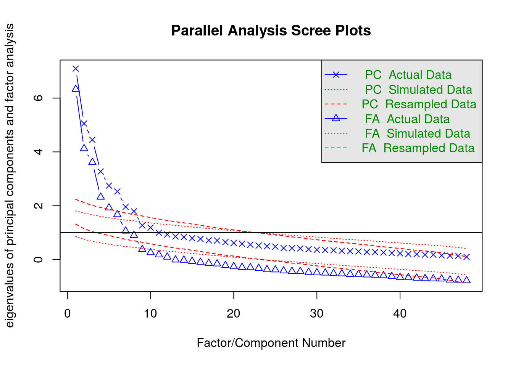
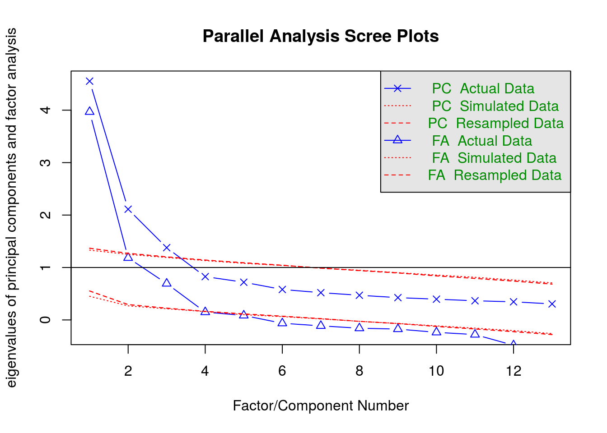
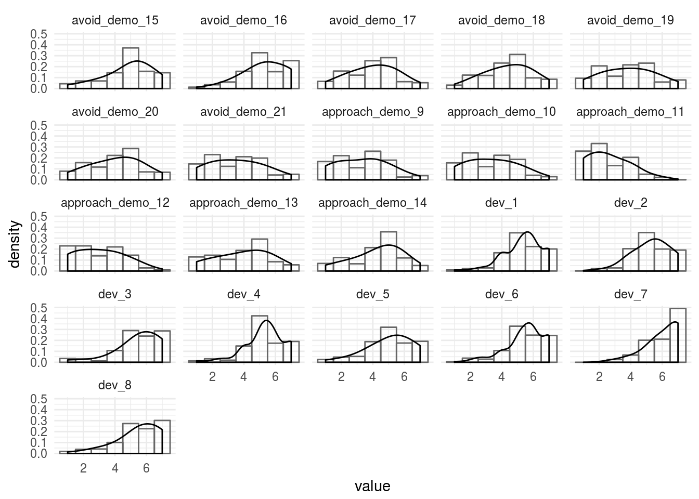

Below, I begin to examine the fit of scales measuring behaviors, beliefs, attitudes, and strategies relevant to mate-seeking and status motives. After examining the item distributions to see if there are any very problematic subsets, I fit a confirmatory factor analysis to remaining scales. I also confirm that an exploratory factor analysis shows expected factor structure.
| Df | AIC | BIC | Chisq | Chisq diff | Df diff | Pr(>Chisq) | cfi | rmsea | mfi | |
|---|---|---|---|---|---|---|---|---|---|---|
| fsmi_cfa_method | 1004 | 35415.74 | 36167.29 | 1685.742 | NA | NA | NA | 0.864 | 0.055 | 0.220 |
| fsmi_cfa | 1052 | 35670.44 | 36258.01 | 2036.439 | 2408.134 | 48 | 0 | 0.804 | 0.064 | 0.112 |
#> lavaan (0.6-1.1193) converged normally after 97 iterations
#>
#> Used Total
#> Number of observations 225 335
#> Number of missing patterns 22
#>
#> Estimator ML Robust
#> Model Fit Test Statistic 2036.439 3150.679
#> Degrees of freedom 1052 1052
#> P-value (Chi-square) 0.000 0.000
#> Scaling correction factor 0.646
#> for the Yuan-Bentler correction
#>
#> Parameter Estimates:
#>
#> Information Observed
#> Observed information based on Hessian
#> Standard Errors Robust.huber.white
#>
#> Latent Variables:
#> Estimate Std.Err z-value P(>|z|) Std.lv Std.all
#> fsmi_affgrp =~
#> fsmi_qs_31 0.916 0.096 9.519 0.000 0.916 0.685
#> fsmi_qs_32 1.098 0.087 12.587 0.000 1.098 0.768
#> fsmi_qs_33 1.052 0.090 11.745 0.000 1.052 0.832
#> fsmi_qs_34 -0.706 0.132 -5.347 0.000 -0.706 -0.466
#> fsmi_qs_35 0.502 0.092 5.431 0.000 0.502 0.472
#> fsmi_qs_36 0.600 0.115 5.193 0.000 0.600 0.483
#> fsmi_affexc =~
#> fsmi_qs_37 1.141 0.102 11.190 0.000 1.141 0.779
#> fsmi_qs_38 1.214 0.095 12.764 0.000 1.214 0.801
#> fsmi_qs_39 1.015 0.101 10.033 0.000 1.015 0.766
#> fsmi_qs_40 1.044 0.134 7.795 0.000 1.044 0.650
#> fsmi_qs_41 1.017 0.128 7.919 0.000 1.017 0.600
#> fsmi_qs_42 0.981 0.153 6.402 0.000 0.981 0.624
#> fsmi_affind =~
#> fsmi_qs_43 1.191 0.117 10.197 0.000 1.191 0.753
#> fsmi_qs_44 0.973 0.118 8.278 0.000 0.973 0.647
#> fsmi_qs_45 0.908 0.121 7.507 0.000 0.908 0.559
#> fsmi_qs_46 1.177 0.117 10.060 0.000 1.177 0.707
#> fsmi_qs_47 0.875 0.127 6.917 0.000 0.875 0.634
#> fsmi_qs_48 1.105 0.116 9.564 0.000 1.105 0.756
#> fsmi_dis =~
#> fsmi_qs_25 -0.893 0.126 -7.065 0.000 -0.893 -0.562
#> fsmi_qs_26 -0.943 0.117 -8.052 0.000 -0.943 -0.615
#> fsmi_qs_27 -0.979 0.135 -7.235 0.000 -0.979 -0.602
#> fsmi_qs_28 1.219 0.093 13.126 0.000 1.219 0.764
#> fsmi_qs_29 1.030 0.105 9.841 0.000 1.030 0.683
#> fsmi_qs_30 1.222 0.096 12.770 0.000 1.222 0.785
#> fsmi_retbrk =~
#> fsmi_qs_7 1.457 0.072 20.280 0.000 1.457 0.842
#> fsmi_qs_8 1.145 0.109 10.524 0.000 1.145 0.689
#> fsmi_qs_9 1.397 0.084 16.588 0.000 1.397 0.855
#> fsmi_qs_10 1.466 0.084 17.505 0.000 1.466 0.856
#> fsmi_qs_11 0.905 0.108 8.421 0.000 0.905 0.582
#> fsmi_qs_12 1.134 0.098 11.575 0.000 1.134 0.733
#> fsmi_prot =~
#> fsmi_qs_19 1.273 0.085 14.902 0.000 1.273 0.805
#> fsmi_qs_20 0.942 0.086 10.901 0.000 0.942 0.710
#> fsmi_qs_21 -0.672 0.105 -6.427 0.000 -0.672 -0.502
#> fsmi_qs_22 1.122 0.089 12.652 0.000 1.122 0.736
#> fsmi_qs_23 1.203 0.091 13.199 0.000 1.203 0.795
#> fsmi_qs_24 0.976 0.086 11.364 0.000 0.976 0.735
#> fsmi_stat =~
#> fsmi_qs_49 0.838 0.127 6.603 0.000 0.838 0.575
#> fsmi_qs_50 0.729 0.114 6.384 0.000 0.729 0.531
#> fsmi_qs_51 0.796 0.102 7.787 0.000 0.796 0.624
#> fsmi_qs_52 0.827 0.117 7.056 0.000 0.827 0.584
#> fsmi_qs_53 0.837 0.111 7.525 0.000 0.837 0.610
#> fsmi_qs_54 -0.433 0.151 -2.875 0.004 -0.433 -0.314
#> fsmi_mate =~
#> fsmi_qs_55 1.411 0.091 15.438 0.000 1.411 0.764
#> fsmi_qs_56 1.891 0.075 25.122 0.000 1.891 0.913
#> fsmi_qs_57 -1.439 0.112 -12.903 0.000 -1.439 -0.723
#> fsmi_qs_58 -1.022 0.120 -8.495 0.000 -1.022 -0.576
#> fsmi_qs_59 -0.931 0.133 -6.995 0.000 -0.931 -0.507
#> fsmi_qs_60 1.905 0.068 28.195 0.000 1.905 0.917
#>
#> Covariances:
#> Estimate Std.Err z-value P(>|z|) Std.lv Std.all
#> fsmi_affgrp ~~
#> fsmi_affexc 0.418 0.093 4.494 0.000 0.418 0.418
#> fsmi_affind -0.404 0.096 -4.208 0.000 -0.404 -0.404
#> fsmi_dis 0.130 0.073 1.787 0.074 0.130 0.130
#> fsmi_retbrk 0.140 0.081 1.729 0.084 0.140 0.140
#> fsmi_prot 0.190 0.086 2.218 0.027 0.190 0.190
#> fsmi_stat 0.385 0.103 3.722 0.000 0.385 0.385
#> fsmi_mate 0.191 0.071 2.671 0.008 0.191 0.191
#> fsmi_affexc ~~
#> fsmi_affind -0.158 0.093 -1.706 0.088 -0.158 -0.158
#> fsmi_dis -0.061 0.086 -0.709 0.478 -0.061 -0.061
#> fsmi_retbrk 0.293 0.095 3.088 0.002 0.293 0.293
#> fsmi_prot 0.151 0.087 1.743 0.081 0.151 0.151
#> fsmi_stat 0.349 0.110 3.170 0.002 0.349 0.349
#> fsmi_mate 0.211 0.077 2.740 0.006 0.211 0.211
#> fsmi_affind ~~
#> fsmi_dis -0.089 0.088 -1.015 0.310 -0.089 -0.089
#> fsmi_retbrk 0.107 0.083 1.282 0.200 0.107 0.107
#> fsmi_prot 0.140 0.094 1.488 0.137 0.140 0.140
#> fsmi_stat -0.003 0.103 -0.029 0.977 -0.003 -0.003
#> fsmi_mate -0.087 0.074 -1.181 0.238 -0.087 -0.087
#> fsmi_dis ~~
#> fsmi_retbrk 0.055 0.094 0.585 0.559 0.055 0.055
#> fsmi_prot -0.220 0.097 -2.276 0.023 -0.220 -0.220
#> fsmi_stat 0.029 0.094 0.310 0.757 0.029 0.029
#> fsmi_mate 0.092 0.080 1.151 0.250 0.092 0.092
#> fsmi_retbrk ~~
#> fsmi_prot 0.097 0.086 1.128 0.260 0.097 0.097
#> fsmi_stat 0.114 0.092 1.235 0.217 0.114 0.114
#> fsmi_mate 0.386 0.071 5.392 0.000 0.386 0.386
#> fsmi_prot ~~
#> fsmi_stat 0.322 0.083 3.879 0.000 0.322 0.322
#> fsmi_mate -0.117 0.079 -1.487 0.137 -0.117 -0.117
#> fsmi_stat ~~
#> fsmi_mate 0.114 0.086 1.316 0.188 0.114 0.114
#>
#> Intercepts:
#> Estimate Std.Err z-value P(>|z|) Std.lv Std.all
#> .fsmi_qs_31 5.030 0.089 56.282 0.000 5.030 3.760
#> .fsmi_qs_32 5.009 0.095 52.548 0.000 5.009 3.503
#> .fsmi_qs_33 5.440 0.084 64.561 0.000 5.440 4.304
#> .fsmi_qs_34 3.733 0.101 36.979 0.000 3.733 2.465
#> .fsmi_qs_35 5.480 0.071 77.341 0.000 5.480 5.156
#> .fsmi_qs_36 5.600 0.083 67.738 0.000 5.600 4.516
#> .fsmi_qs_37 4.904 0.098 49.898 0.000 4.904 3.350
#> .fsmi_qs_38 4.710 0.102 46.238 0.000 4.710 3.107
#> .fsmi_qs_39 4.932 0.089 55.435 0.000 4.932 3.720
#> .fsmi_qs_40 4.793 0.108 44.368 0.000 4.793 2.982
#> .fsmi_qs_41 4.324 0.114 37.852 0.000 4.324 2.549
#> .fsmi_qs_42 4.819 0.106 45.619 0.000 4.819 3.064
#> .fsmi_qs_43 3.714 0.106 35.164 0.000 3.714 2.349
#> .fsmi_qs_44 3.107 0.101 30.856 0.000 3.107 2.065
#> .fsmi_qs_45 3.313 0.109 30.526 0.000 3.313 2.039
#> .fsmi_qs_46 4.737 0.111 42.608 0.000 4.737 2.847
#> .fsmi_qs_47 5.331 0.092 57.844 0.000 5.331 3.861
#> .fsmi_qs_48 4.796 0.097 49.219 0.000 4.796 3.281
#> .fsmi_qs_25 4.044 0.106 38.198 0.000 4.044 2.547
#> .fsmi_qs_26 4.605 0.103 44.885 0.000 4.605 3.003
#> .fsmi_qs_27 3.564 0.109 32.813 0.000 3.564 2.191
#> .fsmi_qs_28 3.884 0.107 36.366 0.000 3.884 2.435
#> .fsmi_qs_29 3.784 0.101 37.572 0.000 3.784 2.509
#> .fsmi_qs_30 3.888 0.104 37.347 0.000 3.888 2.499
#> .fsmi_qs_7 3.564 0.117 30.567 0.000 3.564 2.059
#> .fsmi_qs_8 3.594 0.112 32.058 0.000 3.594 2.163
#> .fsmi_qs_9 3.509 0.110 31.830 0.000 3.509 2.147
#> .fsmi_qs_10 3.651 0.116 31.597 0.000 3.651 2.131
#> .fsmi_qs_11 3.787 0.105 36.109 0.000 3.787 2.437
#> .fsmi_qs_12 3.458 0.104 33.194 0.000 3.458 2.236
#> .fsmi_qs_19 4.627 0.106 43.783 0.000 4.627 2.924
#> .fsmi_qs_20 4.945 0.088 55.885 0.000 4.945 3.729
#> .fsmi_qs_21 3.040 0.089 34.088 0.000 3.040 2.273
#> .fsmi_qs_22 4.633 0.102 45.503 0.000 4.633 3.040
#> .fsmi_qs_23 4.956 0.101 49.106 0.000 4.956 3.274
#> .fsmi_qs_24 5.258 0.089 59.282 0.000 5.258 3.959
#> .fsmi_qs_49 4.638 0.097 47.690 0.000 4.638 3.184
#> .fsmi_qs_50 5.021 0.092 54.459 0.000 5.021 3.655
#> .fsmi_qs_51 4.707 0.085 55.255 0.000 4.707 3.691
#> .fsmi_qs_52 4.242 0.095 44.889 0.000 4.242 2.998
#> .fsmi_qs_53 5.044 0.091 55.149 0.000 5.044 3.677
#> .fsmi_qs_54 4.183 0.092 45.326 0.000 4.183 3.028
#> .fsmi_qs_55 3.545 0.123 28.756 0.000 3.545 1.919
#> .fsmi_qs_56 3.820 0.138 27.604 0.000 3.820 1.844
#> .fsmi_qs_57 3.667 0.133 27.623 0.000 3.667 1.842
#> .fsmi_qs_58 4.649 0.119 39.143 0.000 4.649 2.622
#> .fsmi_qs_59 3.402 0.122 27.820 0.000 3.402 1.854
#> .fsmi_qs_60 3.622 0.138 26.156 0.000 3.622 1.744
#> fsmi_affgrp 0.000 0.000 0.000
#> fsmi_affexc 0.000 0.000 0.000
#> fsmi_affind 0.000 0.000 0.000
#> fsmi_dis 0.000 0.000 0.000
#> fsmi_retbrk 0.000 0.000 0.000
#> fsmi_prot 0.000 0.000 0.000
#> fsmi_stat 0.000 0.000 0.000
#> fsmi_mate 0.000 0.000 0.000
#>
#> Variances:
#> Estimate Std.Err z-value P(>|z|) Std.lv Std.all
#> .fsmi_qs_31 0.951 0.140 6.797 0.000 0.951 0.531
#> .fsmi_qs_32 0.839 0.142 5.921 0.000 0.839 0.410
#> .fsmi_qs_33 0.492 0.092 5.371 0.000 0.492 0.308
#> .fsmi_qs_34 1.794 0.216 8.305 0.000 1.794 0.782
#> .fsmi_qs_35 0.878 0.106 8.251 0.000 0.878 0.777
#> .fsmi_qs_36 1.178 0.191 6.158 0.000 1.178 0.766
#> .fsmi_qs_37 0.842 0.164 5.134 0.000 0.842 0.393
#> .fsmi_qs_38 0.825 0.173 4.768 0.000 0.825 0.359
#> .fsmi_qs_39 0.727 0.108 6.734 0.000 0.727 0.414
#> .fsmi_qs_40 1.493 0.233 6.396 0.000 1.493 0.578
#> .fsmi_qs_41 1.843 0.249 7.387 0.000 1.843 0.640
#> .fsmi_qs_42 1.511 0.282 5.362 0.000 1.511 0.611
#> .fsmi_qs_43 1.082 0.231 4.674 0.000 1.082 0.433
#> .fsmi_qs_44 1.317 0.195 6.742 0.000 1.317 0.582
#> .fsmi_qs_45 1.816 0.204 8.918 0.000 1.816 0.688
#> .fsmi_qs_46 1.384 0.225 6.151 0.000 1.384 0.500
#> .fsmi_qs_47 1.141 0.216 5.291 0.000 1.141 0.598
#> .fsmi_qs_48 0.915 0.217 4.213 0.000 0.915 0.428
#> .fsmi_qs_25 1.725 0.211 8.160 0.000 1.725 0.684
#> .fsmi_qs_26 1.462 0.226 6.458 0.000 1.462 0.622
#> .fsmi_qs_27 1.688 0.240 7.037 0.000 1.688 0.638
#> .fsmi_qs_28 1.059 0.188 5.641 0.000 1.059 0.416
#> .fsmi_qs_29 1.214 0.197 6.173 0.000 1.214 0.534
#> .fsmi_qs_30 0.929 0.176 5.269 0.000 0.929 0.384
#> .fsmi_qs_7 0.874 0.113 7.712 0.000 0.874 0.291
#> .fsmi_qs_8 1.451 0.213 6.812 0.000 1.451 0.525
#> .fsmi_qs_9 0.720 0.136 5.289 0.000 0.720 0.269
#> .fsmi_qs_10 0.785 0.159 4.932 0.000 0.785 0.267
#> .fsmi_qs_11 1.596 0.175 9.101 0.000 1.596 0.661
#> .fsmi_qs_12 1.107 0.186 5.938 0.000 1.107 0.463
#> .fsmi_qs_19 0.884 0.175 5.041 0.000 0.884 0.353
#> .fsmi_qs_20 0.872 0.116 7.524 0.000 0.872 0.496
#> .fsmi_qs_21 1.338 0.157 8.501 0.000 1.338 0.748
#> .fsmi_qs_22 1.063 0.157 6.783 0.000 1.063 0.458
#> .fsmi_qs_23 0.843 0.135 6.243 0.000 0.843 0.368
#> .fsmi_qs_24 0.812 0.137 5.938 0.000 0.812 0.460
#> .fsmi_qs_49 1.419 0.220 6.463 0.000 1.419 0.669
#> .fsmi_qs_50 1.355 0.169 8.008 0.000 1.355 0.718
#> .fsmi_qs_51 0.993 0.154 6.432 0.000 0.993 0.611
#> .fsmi_qs_52 1.319 0.182 7.240 0.000 1.319 0.659
#> .fsmi_qs_53 1.183 0.161 7.335 0.000 1.183 0.628
#> .fsmi_qs_54 1.720 0.192 8.940 0.000 1.720 0.902
#> .fsmi_qs_55 1.420 0.178 7.989 0.000 1.420 0.416
#> .fsmi_qs_56 0.717 0.175 4.088 0.000 0.717 0.167
#> .fsmi_qs_57 1.893 0.271 6.982 0.000 1.893 0.477
#> .fsmi_qs_58 2.099 0.294 7.132 0.000 2.099 0.668
#> .fsmi_qs_59 2.501 0.260 9.635 0.000 2.501 0.743
#> .fsmi_qs_60 0.687 0.152 4.503 0.000 0.687 0.159
#> fsmi_affgrp 1.000 1.000 1.000
#> fsmi_affexc 1.000 1.000 1.000
#> fsmi_affind 1.000 1.000 1.000
#> fsmi_dis 1.000 1.000 1.000
#> fsmi_retbrk 1.000 1.000 1.000
#> fsmi_prot 1.000 1.000 1.000
#> fsmi_stat 1.000 1.000 1.000
#> fsmi_mate 1.000 1.000 1.000
#> lavaan (0.6-1.1193) converged normally after 121 iterations
#>
#> Used Total
#> Number of observations 225 335
#> Number of missing patterns 22
#>
#> Estimator ML Robust
#> Model Fit Test Statistic 1685.742 2514.951
#> Degrees of freedom 1004 1004
#> P-value (Chi-square) 0.000 0.000
#> Scaling correction factor 0.670
#> for the Yuan-Bentler correction
#>
#> Parameter Estimates:
#>
#> Information Observed
#> Observed information based on Hessian
#> Standard Errors Robust.huber.white
#>
#> Latent Variables:
#> Estimate Std.Err z-value P(>|z|) Std.lv Std.all
#> fsmi_affgrp =~
#> fsmi_qs_31 0.729 0.091 7.973 0.000 0.729 0.545
#> fsmi_qs_32 1.075 0.084 12.803 0.000 1.075 0.752
#> fsmi_qs_33 1.030 0.076 13.483 0.000 1.030 0.815
#> fsmi_qs_34 -0.856 0.115 -7.419 0.000 -0.856 -0.565
#> fsmi_qs_35 0.445 0.080 5.532 0.000 0.445 0.419
#> fsmi_qs_36 0.432 0.103 4.184 0.000 0.432 0.348
#> fsmi_affexc =~
#> fsmi_qs_37 0.603 0.181 3.338 0.001 0.603 0.412
#> fsmi_qs_38 0.627 0.186 3.379 0.001 0.627 0.414
#> fsmi_qs_39 0.480 0.155 3.099 0.002 0.480 0.362
#> fsmi_qs_40 -0.372 0.181 -2.061 0.039 -0.372 -0.231
#> fsmi_qs_41 -0.324 0.217 -1.491 0.136 -0.324 -0.191
#> fsmi_qs_42 -0.559 0.201 -2.789 0.005 -0.559 -0.355
#> fsmi_affind =~
#> fsmi_qs_43 1.172 0.124 9.433 0.000 1.172 0.741
#> fsmi_qs_44 0.954 0.120 7.942 0.000 0.954 0.634
#> fsmi_qs_45 0.873 0.126 6.948 0.000 0.873 0.537
#> fsmi_qs_46 1.180 0.111 10.598 0.000 1.180 0.709
#> fsmi_qs_47 0.916 0.125 7.323 0.000 0.916 0.664
#> fsmi_qs_48 1.119 0.114 9.844 0.000 1.119 0.766
#> fsmi_dis =~
#> fsmi_qs_25 -0.871 0.122 -7.170 0.000 -0.871 -0.549
#> fsmi_qs_26 -0.926 0.111 -8.310 0.000 -0.926 -0.604
#> fsmi_qs_27 -0.959 0.130 -7.369 0.000 -0.959 -0.589
#> fsmi_qs_28 1.218 0.094 12.954 0.000 1.218 0.763
#> fsmi_qs_29 1.048 0.102 10.256 0.000 1.048 0.695
#> fsmi_qs_30 1.234 0.095 12.954 0.000 1.234 0.793
#> fsmi_retbrk =~
#> fsmi_qs_7 1.330 0.086 15.450 0.000 1.330 0.769
#> fsmi_qs_8 0.970 0.124 7.837 0.000 0.970 0.584
#> fsmi_qs_9 1.362 0.084 16.228 0.000 1.362 0.834
#> fsmi_qs_10 1.349 0.094 14.309 0.000 1.349 0.788
#> fsmi_qs_11 0.787 0.115 6.863 0.000 0.787 0.506
#> fsmi_qs_12 1.108 0.096 11.516 0.000 1.108 0.717
#> fsmi_prot =~
#> fsmi_qs_19 1.245 0.090 13.766 0.000 1.245 0.787
#> fsmi_qs_20 0.928 0.088 10.489 0.000 0.928 0.700
#> fsmi_qs_21 -0.676 0.109 -6.229 0.000 -0.676 -0.505
#> fsmi_qs_22 1.060 0.097 10.914 0.000 1.060 0.696
#> fsmi_qs_23 1.184 0.095 12.462 0.000 1.184 0.782
#> fsmi_qs_24 0.984 0.088 11.231 0.000 0.984 0.740
#> fsmi_stat =~
#> fsmi_qs_49 0.794 0.126 6.320 0.000 0.794 0.545
#> fsmi_qs_50 0.897 0.113 7.910 0.000 0.897 0.651
#> fsmi_qs_51 0.794 0.105 7.566 0.000 0.794 0.623
#> fsmi_qs_52 0.631 0.118 5.351 0.000 0.631 0.446
#> fsmi_qs_53 0.749 0.111 6.731 0.000 0.749 0.546
#> fsmi_qs_54 -0.289 0.145 -1.994 0.046 -0.289 -0.209
#> fsmi_mate =~
#> fsmi_qs_55 1.350 0.097 13.948 0.000 1.350 0.731
#> fsmi_qs_56 1.841 0.081 22.791 0.000 1.841 0.888
#> fsmi_qs_57 -1.418 0.114 -12.469 0.000 -1.418 -0.712
#> fsmi_qs_58 -1.040 0.114 -9.140 0.000 -1.040 -0.587
#> fsmi_qs_59 -0.906 0.135 -6.725 0.000 -0.906 -0.494
#> fsmi_qs_60 1.874 0.070 26.628 0.000 1.874 0.902
#> fsmi_bifac =~
#> fsmi_qs_31 0.620 0.114 5.446 0.000 0.620 0.464
#> fsmi_qs_32 0.315 0.138 2.287 0.022 0.315 0.221
#> fsmi_qs_33 0.277 0.142 1.954 0.051 0.277 0.219
#> fsmi_qs_34 0.142 0.126 1.128 0.259 0.142 0.094
#> fsmi_qs_35 0.213 0.104 2.054 0.040 0.213 0.200
#> fsmi_qs_36 0.505 0.121 4.191 0.000 0.505 0.407
#> fsmi_qs_37 1.030 0.129 8.009 0.000 1.030 0.704
#> fsmi_qs_38 1.114 0.120 9.245 0.000 1.114 0.735
#> fsmi_qs_39 0.927 0.121 7.656 0.000 0.927 0.700
#> fsmi_qs_40 1.222 0.109 11.181 0.000 1.222 0.760
#> fsmi_qs_41 1.118 0.107 10.435 0.000 1.118 0.659
#> fsmi_qs_42 1.205 0.113 10.707 0.000 1.205 0.765
#> fsmi_qs_43 -0.043 0.159 -0.270 0.787 -0.043 -0.027
#> fsmi_qs_44 -0.097 0.142 -0.682 0.496 -0.097 -0.065
#> fsmi_qs_45 -0.499 0.148 -3.382 0.001 -0.499 -0.307
#> fsmi_qs_46 -0.214 0.135 -1.590 0.112 -0.214 -0.129
#> fsmi_qs_47 0.201 0.138 1.460 0.144 0.201 0.146
#> fsmi_qs_48 -0.012 0.141 -0.087 0.931 -0.012 -0.008
#> fsmi_qs_25 0.272 0.119 2.281 0.023 0.272 0.171
#> fsmi_qs_26 0.258 0.131 1.963 0.050 0.258 0.168
#> fsmi_qs_27 0.247 0.132 1.863 0.063 0.247 0.152
#> fsmi_qs_28 -0.058 0.129 -0.446 0.656 -0.058 -0.036
#> fsmi_qs_29 0.086 0.123 0.704 0.482 0.086 0.057
#> fsmi_qs_30 0.017 0.137 0.127 0.899 0.017 0.011
#> fsmi_qs_7 0.584 0.142 4.109 0.000 0.584 0.338
#> fsmi_qs_8 0.637 0.132 4.826 0.000 0.637 0.384
#> fsmi_qs_9 0.384 0.138 2.780 0.005 0.384 0.235
#> fsmi_qs_10 0.571 0.142 4.028 0.000 0.571 0.333
#> fsmi_qs_11 0.446 0.133 3.344 0.001 0.446 0.287
#> fsmi_qs_12 0.284 0.135 2.109 0.035 0.284 0.184
#> fsmi_qs_19 0.259 0.129 2.009 0.045 0.259 0.163
#> fsmi_qs_20 0.167 0.105 1.582 0.114 0.167 0.126
#> fsmi_qs_21 -0.049 0.108 -0.456 0.648 -0.049 -0.037
#> fsmi_qs_22 0.428 0.129 3.327 0.001 0.428 0.281
#> fsmi_qs_23 0.215 0.130 1.653 0.098 0.215 0.142
#> fsmi_qs_24 0.086 0.102 0.848 0.396 0.086 0.065
#> fsmi_qs_49 0.318 0.137 2.321 0.020 0.318 0.218
#> fsmi_qs_50 -0.066 0.131 -0.501 0.616 -0.066 -0.048
#> fsmi_qs_51 0.176 0.112 1.570 0.116 0.176 0.138
#> fsmi_qs_52 0.530 0.107 4.970 0.000 0.530 0.375
#> fsmi_qs_53 0.333 0.122 2.735 0.006 0.333 0.243
#> fsmi_qs_54 -0.360 0.121 -2.971 0.003 -0.360 -0.261
#> fsmi_qs_55 0.432 0.138 3.129 0.002 0.432 0.234
#> fsmi_qs_56 0.433 0.158 2.748 0.006 0.433 0.209
#> fsmi_qs_57 -0.252 0.154 -1.639 0.101 -0.252 -0.127
#> fsmi_qs_58 -0.039 0.154 -0.252 0.801 -0.039 -0.022
#> fsmi_qs_59 -0.217 0.162 -1.333 0.182 -0.217 -0.118
#> fsmi_qs_60 0.351 0.144 2.441 0.015 0.351 0.169
#>
#> Covariances:
#> Estimate Std.Err z-value P(>|z|) Std.lv Std.all
#> fsmi_affgrp ~~
#> fsmi_bifac 0.000 0.000 0.000
#> fsmi_affexc ~~
#> fsmi_bifac 0.000 0.000 0.000
#> fsmi_affind ~~
#> fsmi_bifac 0.000 0.000 0.000
#> fsmi_dis ~~
#> fsmi_bifac 0.000 0.000 0.000
#> fsmi_retbrk ~~
#> fsmi_bifac 0.000 0.000 0.000
#> fsmi_prot ~~
#> fsmi_bifac 0.000 0.000 0.000
#> fsmi_stat ~~
#> fsmi_bifac 0.000 0.000 0.000
#> fsmi_mate ~~
#> fsmi_bifac 0.000 0.000 0.000
#> fsmi_affgrp ~~
#> fsmi_affexc 0.276 0.110 2.522 0.012 0.276 0.276
#> fsmi_affind -0.388 0.102 -3.803 0.000 -0.388 -0.388
#> fsmi_dis 0.168 0.075 2.238 0.025 0.168 0.168
#> fsmi_retbrk 0.015 0.080 0.190 0.849 0.015 0.015
#> fsmi_prot 0.125 0.087 1.442 0.149 0.125 0.125
#> fsmi_stat 0.296 0.105 2.811 0.005 0.296 0.296
#> fsmi_mate 0.126 0.075 1.671 0.095 0.126 0.126
#> fsmi_affexc ~~
#> fsmi_affind -0.375 0.088 -4.261 0.000 -0.375 -0.375
#> fsmi_dis 0.042 0.097 0.431 0.666 0.042 0.042
#> fsmi_retbrk -0.310 0.090 -3.445 0.001 -0.310 -0.310
#> fsmi_prot -0.107 0.099 -1.079 0.281 -0.107 -0.107
#> fsmi_stat 0.136 0.106 1.279 0.201 0.136 0.136
#> fsmi_mate -0.031 0.100 -0.307 0.759 -0.031 -0.031
#> fsmi_affind ~~
#> fsmi_dis -0.090 0.088 -1.020 0.308 -0.090 -0.090
#> fsmi_retbrk 0.140 0.089 1.575 0.115 0.140 0.140
#> fsmi_prot 0.158 0.091 1.750 0.080 0.158 0.158
#> fsmi_stat 0.046 0.106 0.435 0.663 0.046 0.046
#> fsmi_mate -0.072 0.076 -0.950 0.342 -0.072 -0.072
#> fsmi_dis ~~
#> fsmi_retbrk 0.092 0.093 0.998 0.318 0.092 0.092
#> fsmi_prot -0.206 0.100 -2.070 0.038 -0.206 -0.206
#> fsmi_stat 0.050 0.098 0.514 0.607 0.050 0.050
#> fsmi_mate 0.111 0.079 1.401 0.161 0.111 0.111
#> fsmi_retbrk ~~
#> fsmi_prot 0.021 0.089 0.241 0.810 0.021 0.021
#> fsmi_stat -0.011 0.100 -0.114 0.909 -0.011 -0.011
#> fsmi_mate 0.339 0.078 4.341 0.000 0.339 0.339
#> fsmi_prot ~~
#> fsmi_stat 0.280 0.089 3.141 0.002 0.280 0.280
#> fsmi_mate -0.165 0.076 -2.164 0.030 -0.165 -0.165
#> fsmi_stat ~~
#> fsmi_mate 0.047 0.094 0.498 0.619 0.047 0.047
#>
#> Intercepts:
#> Estimate Std.Err z-value P(>|z|) Std.lv Std.all
#> .fsmi_qs_31 5.028 0.089 56.246 0.000 5.028 3.763
#> .fsmi_qs_32 5.009 0.095 52.548 0.000 5.009 3.503
#> .fsmi_qs_33 5.440 0.084 64.561 0.000 5.440 4.304
#> .fsmi_qs_34 3.733 0.101 36.979 0.000 3.733 2.465
#> .fsmi_qs_35 5.480 0.071 77.341 0.000 5.480 5.156
#> .fsmi_qs_36 5.600 0.083 67.738 0.000 5.600 4.516
#> .fsmi_qs_37 4.900 0.098 49.773 0.000 4.900 3.347
#> .fsmi_qs_38 4.705 0.102 46.159 0.000 4.705 3.105
#> .fsmi_qs_39 4.927 0.089 55.300 0.000 4.927 3.720
#> .fsmi_qs_40 4.796 0.108 44.236 0.000 4.796 2.982
#> .fsmi_qs_41 4.321 0.114 37.786 0.000 4.321 2.547
#> .fsmi_qs_42 4.821 0.106 45.463 0.000 4.821 3.062
#> .fsmi_qs_43 3.714 0.106 35.177 0.000 3.714 2.349
#> .fsmi_qs_44 3.107 0.101 30.861 0.000 3.107 2.066
#> .fsmi_qs_45 3.314 0.109 30.524 0.000 3.314 2.039
#> .fsmi_qs_46 4.738 0.111 42.632 0.000 4.738 2.847
#> .fsmi_qs_47 5.330 0.092 57.792 0.000 5.330 3.861
#> .fsmi_qs_48 4.796 0.097 49.219 0.000 4.796 3.281
#> .fsmi_qs_25 4.044 0.106 38.198 0.000 4.044 2.547
#> .fsmi_qs_26 4.604 0.103 44.831 0.000 4.604 3.002
#> .fsmi_qs_27 3.563 0.109 32.808 0.000 3.563 2.190
#> .fsmi_qs_28 3.884 0.107 36.365 0.000 3.884 2.434
#> .fsmi_qs_29 3.784 0.101 37.550 0.000 3.784 2.509
#> .fsmi_qs_30 3.889 0.104 37.336 0.000 3.889 2.499
#> .fsmi_qs_7 3.562 0.116 30.586 0.000 3.562 2.059
#> .fsmi_qs_8 3.592 0.112 32.079 0.000 3.592 2.163
#> .fsmi_qs_9 3.507 0.110 31.862 0.000 3.507 2.147
#> .fsmi_qs_10 3.648 0.115 31.630 0.000 3.648 2.131
#> .fsmi_qs_11 3.784 0.105 36.073 0.000 3.784 2.434
#> .fsmi_qs_12 3.458 0.104 33.258 0.000 3.458 2.240
#> .fsmi_qs_19 4.627 0.106 43.746 0.000 4.627 2.923
#> .fsmi_qs_20 4.945 0.088 55.891 0.000 4.945 3.728
#> .fsmi_qs_21 3.040 0.089 34.088 0.000 3.040 2.273
#> .fsmi_qs_22 4.632 0.102 45.468 0.000 4.632 3.038
#> .fsmi_qs_23 4.956 0.101 49.106 0.000 4.956 3.274
#> .fsmi_qs_24 5.259 0.089 59.296 0.000 5.259 3.959
#> .fsmi_qs_49 4.637 0.097 47.688 0.000 4.637 3.184
#> .fsmi_qs_50 5.029 0.092 54.623 0.000 5.029 3.650
#> .fsmi_qs_51 4.707 0.085 55.299 0.000 4.707 3.693
#> .fsmi_qs_52 4.243 0.095 44.898 0.000 4.243 2.998
#> .fsmi_qs_53 5.044 0.091 55.149 0.000 5.044 3.677
#> .fsmi_qs_54 4.184 0.092 45.325 0.000 4.184 3.029
#> .fsmi_qs_55 3.545 0.123 28.751 0.000 3.545 1.919
#> .fsmi_qs_56 3.820 0.138 27.599 0.000 3.820 1.843
#> .fsmi_qs_57 3.667 0.133 27.623 0.000 3.667 1.842
#> .fsmi_qs_58 4.649 0.119 39.140 0.000 4.649 2.622
#> .fsmi_qs_59 3.402 0.122 27.820 0.000 3.402 1.854
#> .fsmi_qs_60 3.622 0.138 26.156 0.000 3.622 1.744
#> fsmi_affgrp 0.000 0.000 0.000
#> fsmi_affexc 0.000 0.000 0.000
#> fsmi_affind 0.000 0.000 0.000
#> fsmi_dis 0.000 0.000 0.000
#> fsmi_retbrk 0.000 0.000 0.000
#> fsmi_prot 0.000 0.000 0.000
#> fsmi_stat 0.000 0.000 0.000
#> fsmi_mate 0.000 0.000 0.000
#> fsmi_bifac 0.000 0.000 0.000
#>
#> Variances:
#> Estimate Std.Err z-value P(>|z|) Std.lv Std.all
#> .fsmi_qs_31 0.870 0.120 7.230 0.000 0.870 0.487
#> .fsmi_qs_32 0.789 0.137 5.756 0.000 0.789 0.386
#> .fsmi_qs_33 0.460 0.085 5.437 0.000 0.460 0.288
#> .fsmi_qs_34 1.541 0.202 7.633 0.000 1.541 0.672
#> .fsmi_qs_35 0.886 0.106 8.329 0.000 0.886 0.785
#> .fsmi_qs_36 1.096 0.165 6.635 0.000 1.096 0.713
#> .fsmi_qs_37 0.718 0.148 4.841 0.000 0.718 0.335
#> .fsmi_qs_38 0.663 0.135 4.926 0.000 0.663 0.289
#> .fsmi_qs_39 0.665 0.124 5.381 0.000 0.665 0.379
#> .fsmi_qs_40 0.954 0.162 5.905 0.000 0.954 0.369
#> .fsmi_qs_41 1.522 0.214 7.117 0.000 1.522 0.529
#> .fsmi_qs_42 0.714 0.168 4.242 0.000 0.714 0.288
#> .fsmi_qs_43 1.125 0.248 4.543 0.000 1.125 0.450
#> .fsmi_qs_44 1.343 0.197 6.830 0.000 1.343 0.594
#> .fsmi_qs_45 1.629 0.196 8.325 0.000 1.629 0.617
#> .fsmi_qs_46 1.330 0.215 6.183 0.000 1.330 0.480
#> .fsmi_qs_47 1.026 0.174 5.908 0.000 1.026 0.538
#> .fsmi_qs_48 0.884 0.209 4.233 0.000 0.884 0.414
#> .fsmi_qs_25 1.689 0.193 8.763 0.000 1.689 0.670
#> .fsmi_qs_26 1.429 0.202 7.088 0.000 1.429 0.608
#> .fsmi_qs_27 1.667 0.224 7.430 0.000 1.667 0.630
#> .fsmi_qs_28 1.060 0.187 5.680 0.000 1.060 0.416
#> .fsmi_qs_29 1.168 0.193 6.062 0.000 1.168 0.514
#> .fsmi_qs_30 0.900 0.174 5.182 0.000 0.900 0.372
#> .fsmi_qs_7 0.880 0.113 7.769 0.000 0.880 0.294
#> .fsmi_qs_8 1.410 0.203 6.949 0.000 1.410 0.511
#> .fsmi_qs_9 0.665 0.131 5.075 0.000 0.665 0.249
#> .fsmi_qs_10 0.784 0.156 5.021 0.000 0.784 0.268
#> .fsmi_qs_11 1.600 0.173 9.247 0.000 1.600 0.662
#> .fsmi_qs_12 1.076 0.173 6.203 0.000 1.076 0.451
#> .fsmi_qs_19 0.888 0.178 4.990 0.000 0.888 0.354
#> .fsmi_qs_20 0.870 0.118 7.384 0.000 0.870 0.494
#> .fsmi_qs_21 1.330 0.158 8.393 0.000 1.330 0.743
#> .fsmi_qs_22 1.017 0.144 7.069 0.000 1.017 0.437
#> .fsmi_qs_23 0.843 0.139 6.047 0.000 0.843 0.368
#> .fsmi_qs_24 0.790 0.135 5.832 0.000 0.790 0.448
#> .fsmi_qs_49 1.391 0.218 6.387 0.000 1.391 0.656
#> .fsmi_qs_50 1.090 0.170 6.427 0.000 1.090 0.574
#> .fsmi_qs_51 0.963 0.155 6.200 0.000 0.963 0.593
#> .fsmi_qs_52 1.324 0.153 8.652 0.000 1.324 0.661
#> .fsmi_qs_53 1.211 0.160 7.563 0.000 1.211 0.643
#> .fsmi_qs_54 1.694 0.186 9.094 0.000 1.694 0.888
#> .fsmi_qs_55 1.403 0.177 7.923 0.000 1.403 0.411
#> .fsmi_qs_56 0.719 0.174 4.123 0.000 0.719 0.167
#> .fsmi_qs_57 1.891 0.269 7.023 0.000 1.891 0.477
#> .fsmi_qs_58 2.060 0.280 7.356 0.000 2.060 0.655
#> .fsmi_qs_59 2.500 0.259 9.652 0.000 2.500 0.742
#> .fsmi_qs_60 0.679 0.154 4.410 0.000 0.679 0.157
#> fsmi_affgrp 1.000 1.000 1.000
#> fsmi_affexc 1.000 1.000 1.000
#> fsmi_affind 1.000 1.000 1.000
#> fsmi_dis 1.000 1.000 1.000
#> fsmi_retbrk 1.000 1.000 1.000
#> fsmi_prot 1.000 1.000 1.000
#> fsmi_stat 1.000 1.000 1.000
#> fsmi_mate 1.000 1.000 1.000
#> fsmi_bifac 1.000 1.000 1.000
#> Scaled Chi Square Difference Test (method = "satorra.bentler.2001")
#>
#> Df AIC BIC Chisq Chisq diff Df diff Pr(>Chisq)
#> fsmi_cfa_method 1004 35416 36167 1685.7
#> fsmi_cfa 1052 35670 36258 2036.4 2408.1 48 < 2.2e-16 ***
#> ---
#> Signif. codes: 0 '***' 0.001 '**' 0.01 '*' 0.05 '.' 0.1 ' ' 1
#> [[1]]
#> [[1]]$baseline
#> rmsea mfi
#> 0.064 0.112
#>
#> [[1]]$bifac
#> rmsea mfi
#> 0.055 0.220
#>
#>
#> [[2]]
#> [[2]]$baseline
#> gammaHat adjGammaHat
#> 0.8452247 0.8269812
#>
#> [[2]]$bifac
#> gammaHat adjGammaHat
#> 0.8874594 0.8681796
#> Parallel analysis suggests that the number of factors = 8 and the number of components = 8
#> Factor Analysis using method = ml
#> Call: psych::fa(r = splt_fsmi[, unlist(get_items_from_keys(fsmi_key[scales_to_use]))],
#> nfactors = 8, n.iter = 1, scores = "tenBerge", missing = F,
#> fm = "ml")
#> Standardized loadings (pattern matrix) based upon correlation matrix
#> item ML4 ML6 ML1 ML2 ML3 ML5 ML7 ML8 h2 u2
#> fsmi_qs_9 27 0.87 0.75 0.25
#> fsmi_qs_10 28 0.85 0.75 0.25
#> fsmi_qs_7 25 0.81 0.71 0.29
#> fsmi_qs_12 30 0.70 0.58 0.42
#> fsmi_qs_8 26 0.62 0.49 0.51
#> fsmi_qs_11 29 0.58 0.40 0.60
#> fsmi_qs_38 8 0.77 0.65 0.35
#> fsmi_qs_37 7 0.77 0.61 0.39
#> fsmi_qs_39 9 0.71 0.63 0.37
#> fsmi_qs_40 10 0.66 0.54 0.46
#> fsmi_qs_41 11 0.63 0.49 0.51
#> fsmi_qs_42 12 0.62 0.50 0.50
#> fsmi_qs_56 44 0.91 0.85 0.15
#> fsmi_qs_60 48 0.90 0.84 0.16
#> fsmi_qs_57 45 -0.75 0.56 0.44
#> fsmi_qs_55 43 0.73 0.60 0.40
#> fsmi_qs_58 46 -0.57 0.37 0.63
#> fsmi_qs_59 47 -0.48 0.30 0.70
#> fsmi_qs_23 35 0.81 0.67 0.33
#> fsmi_qs_19 31 0.80 0.67 0.33
#> fsmi_qs_24 36 0.79 0.60 0.40
#> fsmi_qs_22 34 0.67 0.58 0.42
#> fsmi_qs_20 32 0.66 0.52 0.48
#> fsmi_qs_21 33 -0.45 0.32 0.68
#> fsmi_qs_48 18 0.82 0.66 0.34
#> fsmi_qs_47 17 0.73 0.53 0.47
#> fsmi_qs_46 16 0.72 0.60 0.40
#> fsmi_qs_43 13 0.61 -0.32 0.62 0.38
#> fsmi_qs_44 14 0.54 -0.26 0.42 0.58
#> fsmi_qs_45 15 0.45 0.41 0.59
#> fsmi_qs_30 24 0.82 0.68 0.32
#> fsmi_qs_28 22 0.73 0.59 0.41
#> fsmi_qs_29 23 0.70 0.51 0.49
#> fsmi_qs_26 20 -0.62 0.45 0.55
#> fsmi_qs_27 21 -0.57 0.41 0.59
#> fsmi_qs_25 19 -0.53 0.33 0.67
#> fsmi_qs_33 3 0.80 0.71 0.29
#> fsmi_qs_32 2 0.78 0.64 0.36
#> fsmi_qs_34 4 -0.50 0.30 0.70
#> fsmi_qs_31 1 0.33 0.44 0.53 0.47
#> fsmi_qs_36 6 0.27 0.37 0.35 0.65
#> fsmi_qs_35 5 0.35 0.28 0.72
#> fsmi_qs_50 38 0.68 0.49 0.51
#> fsmi_qs_51 39 0.61 0.42 0.58
#> fsmi_qs_49 37 0.57 0.38 0.62
#> fsmi_qs_53 41 0.49 0.34 0.66
#> fsmi_qs_52 40 0.30 0.41 0.34 0.66
#> fsmi_qs_54 42 0.28 0.28 -0.34 0.27 0.73
#> com
#> fsmi_qs_9 1.0
#> fsmi_qs_10 1.0
#> fsmi_qs_7 1.0
#> fsmi_qs_12 1.2
#> fsmi_qs_8 1.2
#> fsmi_qs_11 1.3
#> fsmi_qs_38 1.1
#> fsmi_qs_37 1.1
#> fsmi_qs_39 1.3
#> fsmi_qs_40 1.3
#> fsmi_qs_41 1.4
#> fsmi_qs_42 1.3
#> fsmi_qs_56 1.0
#> fsmi_qs_60 1.0
#> fsmi_qs_57 1.1
#> fsmi_qs_55 1.1
#> fsmi_qs_58 1.3
#> fsmi_qs_59 1.5
#> fsmi_qs_23 1.1
#> fsmi_qs_19 1.1
#> fsmi_qs_24 1.1
#> fsmi_qs_22 1.3
#> fsmi_qs_20 1.2
#> fsmi_qs_21 2.1
#> fsmi_qs_48 1.0
#> fsmi_qs_47 1.1
#> fsmi_qs_46 1.3
#> fsmi_qs_43 1.8
#> fsmi_qs_44 1.5
#> fsmi_qs_45 2.7
#> fsmi_qs_30 1.0
#> fsmi_qs_28 1.1
#> fsmi_qs_29 1.1
#> fsmi_qs_26 1.3
#> fsmi_qs_27 1.4
#> fsmi_qs_25 1.2
#> fsmi_qs_33 1.0
#> fsmi_qs_32 1.0
#> fsmi_qs_34 1.6
#> fsmi_qs_31 2.5
#> fsmi_qs_36 2.9
#> fsmi_qs_35 2.5
#> fsmi_qs_50 1.2
#> fsmi_qs_51 1.2
#> fsmi_qs_49 1.2
#> fsmi_qs_53 1.5
#> fsmi_qs_52 2.4
#> fsmi_qs_54 4.0
#>
#> ML4 ML6 ML1 ML2 ML3 ML5 ML7 ML8
#> SS loadings 3.83 3.79 3.55 3.39 2.99 2.90 2.63 2.13
#> Proportion Var 0.08 0.08 0.07 0.07 0.06 0.06 0.05 0.04
#> Cumulative Var 0.08 0.16 0.23 0.30 0.37 0.43 0.48 0.53
#> Proportion Explained 0.15 0.15 0.14 0.13 0.12 0.11 0.10 0.08
#> Cumulative Proportion 0.15 0.30 0.44 0.58 0.70 0.81 0.92 1.00
#>
#> With factor correlations of
#> ML4 ML6 ML1 ML2 ML3 ML5 ML7 ML8
#> ML4 1.00 0.24 0.30 0.10 0.10 0.05 0.03 0.02
#> ML6 0.24 1.00 0.15 0.13 -0.09 -0.06 0.20 0.18
#> ML1 0.30 0.15 1.00 -0.10 -0.07 0.07 0.12 0.06
#> ML2 0.10 0.13 -0.10 1.00 0.13 -0.16 0.10 0.20
#> ML3 0.10 -0.09 -0.07 0.13 1.00 -0.04 -0.23 0.01
#> ML5 0.05 -0.06 0.07 -0.16 -0.04 1.00 0.12 0.02
#> ML7 0.03 0.20 0.12 0.10 -0.23 0.12 1.00 0.23
#> ML8 0.02 0.18 0.06 0.20 0.01 0.02 0.23 1.00
#>
#> Mean item complexity = 1.4
#> Test of the hypothesis that 8 factors are sufficient.
#>
#> The degrees of freedom for the null model are 1128 and the objective function was 27.8 with Chi Square of 8816.35
#> The degrees of freedom for the model are 772 and the objective function was 5.99
#>
#> The root mean square of the residuals (RMSR) is 0.04
#> The df corrected root mean square of the residuals is 0.04
#>
#> The harmonic number of observations is 221 with the empirical chi square 645.35 with prob < 1
#> The total number of observations was 335 with Likelihood Chi Square = 1867.17 with prob < 2.5e-92
#>
#> Tucker Lewis Index of factoring reliability = 0.788
#> RMSEA index = 0.069 and the 90 % confidence intervals are 0.061 NA
#> BIC = -2621.34
#> Fit based upon off diagonal values = 0.97
#> Measures of factor score adequacy
#> ML4 ML6 ML1 ML2 ML3
#> Correlation of (regression) scores with factors 0.96 0.94 0.97 0.94 0.93
#> Multiple R square of scores with factors 0.92 0.89 0.93 0.89 0.87
#> Minimum correlation of possible factor scores 0.84 0.79 0.87 0.79 0.75
#> ML5 ML7 ML8
#> Correlation of (regression) scores with factors 0.93 0.93 0.88
#> Multiple R square of scores with factors 0.87 0.86 0.78
#> Minimum correlation of possible factor scores 0.73 0.72 0.56
#>
#> Factor scores estimated using the tenBerge method have correlations of
#> ML4 ML6 ML1 ML2 ML3
#> Correlation of scores with factors 0.98 0.97 0.98 0.97 0.97
#> Multiple R square of scores with factors 0.96 0.94 0.97 0.94 0.93
#> Minimum correlation of possible factor scores 0.92 0.89 0.93 0.89 0.87
#> ML5 ML7 ML8
#> Correlation of scores with factors 0.96 0.96 0.94
#> Multiple R square of scores with factors 0.93 0.93 0.88
#> Minimum correlation of possible factor scores 0.86 0.85 0.76
#> Factor Analysis using method = ml
#> Call: psych::fa(r = splt_fsmi[, unlist(get_items_from_keys(fsmi_key[scales_to_use]))],
#> nfactors = 9, n.iter = 1, rotate = "bifactor", scores = "tenBerge",
#> missing = F, fm = "ml")
#> Standardized loadings (pattern matrix) based upon correlation matrix
#> ML1 ML2 ML6 ML4 ML5 ML3 ML9 ML8 ML7 h2 u2
#> fsmi_qs_31 0.60 0.31 0.52 0.48
#> fsmi_qs_32 0.46 0.70 0.72 0.28
#> fsmi_qs_33 0.53 0.59 0.67 0.33
#> fsmi_qs_34 -0.61 0.45 0.55
#> fsmi_qs_35 0.36 0.27 0.73
#> fsmi_qs_36 0.61 0.43 0.57
#> fsmi_qs_37 0.47 0.61 0.62 0.38
#> fsmi_qs_38 0.57 0.54 0.64 0.36
#> fsmi_qs_39 0.59 0.49 0.63 0.37
#> fsmi_qs_40 0.54 0.43 0.57 0.43
#> fsmi_qs_41 0.28 0.60 0.52 0.48
#> fsmi_qs_42 0.49 0.44 0.51 0.49
#> fsmi_qs_43 -0.45 0.56 0.30 0.70 0.30
#> fsmi_qs_44 -0.39 0.48 0.50 0.50
#> fsmi_qs_45 -0.55 0.36 0.31 0.58 0.42
#> fsmi_qs_46 0.70 0.60 0.40
#> fsmi_qs_47 0.74 0.56 0.44
#> fsmi_qs_48 0.83 0.71 0.29
#> fsmi_qs_25 -0.54 0.35 0.65
#> fsmi_qs_26 -0.62 0.46 0.54
#> fsmi_qs_27 -0.58 0.42 0.58
#> fsmi_qs_28 0.74 0.59 0.41
#> fsmi_qs_29 0.69 0.51 0.49
#> fsmi_qs_30 0.81 0.68 0.32
#> fsmi_qs_7 0.32 0.77 0.72 0.28
#> fsmi_qs_8 0.36 0.57 0.49 0.51
#> fsmi_qs_9 0.30 0.79 0.75 0.25
#> fsmi_qs_10 0.40 0.76 0.76 0.24
#> fsmi_qs_11 0.30 0.51 0.40 0.60
#> fsmi_qs_12 0.67 0.57 0.43
#> fsmi_qs_19 0.78 0.67 0.33
#> fsmi_qs_20 0.67 0.52 0.48
#> fsmi_qs_21 -0.46 0.32 0.68
#> fsmi_qs_22 0.67 0.58 0.42
#> fsmi_qs_23 0.79 0.67 0.33
#> fsmi_qs_24 0.77 0.61 0.39
#> fsmi_qs_49 0.32 0.52 0.39 0.61
#> fsmi_qs_50 -0.26 0.57 0.50 0.50
#> fsmi_qs_51 0.61 0.45 0.55
#> fsmi_qs_52 0.32 0.37 0.34 0.66
#> fsmi_qs_53 0.38 0.40 0.35 0.65
#> fsmi_qs_54 -0.30 0.26 0.74
#> fsmi_qs_55 0.30 0.69 0.62 0.38
#> fsmi_qs_56 0.36 0.83 0.84 0.16
#> fsmi_qs_57 -0.26 -0.69 0.56 0.44
#> fsmi_qs_58 -0.52 0.40 0.60
#> fsmi_qs_59 -0.25 -0.43 0.33 0.67
#> fsmi_qs_60 0.33 0.84 0.84 0.16
#> com
#> fsmi_qs_31 1.9
#> fsmi_qs_32 1.8
#> fsmi_qs_33 2.3
#> fsmi_qs_34 1.4
#> fsmi_qs_35 3.2
#> fsmi_qs_36 1.3
#> fsmi_qs_37 2.1
#> fsmi_qs_38 2.2
#> fsmi_qs_39 2.2
#> fsmi_qs_40 2.7
#> fsmi_qs_41 2.0
#> fsmi_qs_42 2.7
#> fsmi_qs_43 3.3
#> fsmi_qs_44 3.2
#> fsmi_qs_45 2.9
#> fsmi_qs_46 1.4
#> fsmi_qs_47 1.1
#> fsmi_qs_48 1.1
#> fsmi_qs_25 1.4
#> fsmi_qs_26 1.4
#> fsmi_qs_27 1.5
#> fsmi_qs_28 1.2
#> fsmi_qs_29 1.1
#> fsmi_qs_30 1.1
#> fsmi_qs_7 1.5
#> fsmi_qs_8 2.0
#> fsmi_qs_9 1.4
#> fsmi_qs_10 1.6
#> fsmi_qs_11 2.0
#> fsmi_qs_12 1.6
#> fsmi_qs_19 1.2
#> fsmi_qs_20 1.3
#> fsmi_qs_21 2.1
#> fsmi_qs_22 1.6
#> fsmi_qs_23 1.2
#> fsmi_qs_24 1.1
#> fsmi_qs_49 1.8
#> fsmi_qs_50 2.1
#> fsmi_qs_51 1.5
#> fsmi_qs_52 3.4
#> fsmi_qs_53 2.6
#> fsmi_qs_54 4.4
#> fsmi_qs_55 1.6
#> fsmi_qs_56 1.4
#> fsmi_qs_57 1.4
#> fsmi_qs_58 2.1
#> fsmi_qs_59 2.7
#> fsmi_qs_60 1.4
#>
#> ML1 ML2 ML6 ML4 ML5 ML3 ML9 ML8 ML7
#> SS loadings 5.33 3.33 3.31 3.08 2.90 2.79 2.11 1.66 1.62
#> Proportion Var 0.11 0.07 0.07 0.06 0.06 0.06 0.04 0.03 0.03
#> Cumulative Var 0.11 0.18 0.25 0.31 0.37 0.43 0.48 0.51 0.54
#> Proportion Explained 0.20 0.13 0.13 0.12 0.11 0.11 0.08 0.06 0.06
#> Cumulative Proportion 0.20 0.33 0.46 0.58 0.69 0.79 0.87 0.94 1.00
#>
#> Mean item complexity = 1.9
#> Test of the hypothesis that 9 factors are sufficient.
#>
#> The degrees of freedom for the null model are 1128 and the objective function was 27.8 with Chi Square of 8816.35
#> The degrees of freedom for the model are 732 and the objective function was 5.37
#>
#> The root mean square of the residuals (RMSR) is 0.03
#> The df corrected root mean square of the residuals is 0.04
#>
#> The harmonic number of observations is 221 with the empirical chi square 520.46 with prob < 1
#> The total number of observations was 335 with Likelihood Chi Square = 1669.76 with prob < 4.6e-75
#>
#> Tucker Lewis Index of factoring reliability = 0.808
#> RMSEA index = 0.066 and the 90 % confidence intervals are 0.058 0.066
#> BIC = -2586.19
#> Fit based upon off diagonal values = 0.97
#> Measures of factor score adequacy
#> ML1 ML2 ML6 ML4 ML5
#> Correlation of (regression) scores with factors 0.94 0.94 0.94 0.95 0.93
#> Multiple R square of scores with factors 0.88 0.88 0.89 0.91 0.86
#> Minimum correlation of possible factor scores 0.76 0.75 0.78 0.81 0.72
#> ML3 ML9 ML8 ML7
#> Correlation of (regression) scores with factors 0.93 0.89 0.86 0.87
#> Multiple R square of scores with factors 0.86 0.79 0.73 0.76
#> Minimum correlation of possible factor scores 0.71 0.58 0.47 0.53
#>
#> Factor scores estimated using the tenBerge method have correlations of
#> ML1 ML2 ML6 ML4 ML5
#> Correlation of scores with factors 0.97 0.97 0.97 0.98 0.96
#> Multiple R square of scores with factors 0.94 0.94 0.94 0.95 0.93
#> Minimum correlation of possible factor scores 0.87 0.87 0.88 0.90 0.85
#> ML3 ML9 ML8 ML7
#> Correlation of scores with factors 0.96 0.94 0.93 0.93
#> Multiple R square of scores with factors 0.92 0.89 0.86 0.87
#> Minimum correlation of possible factor scores 0.85 0.77 0.71 0.75Figure 1: FSMI CFA with method bifactor. Path weight reflects standardized loading strength, with minimum cuttoff for showing path set at .20, and maximum weight at .90 (apparent for several mate-seeking items). Residual and means not shown.
Figure 2: FSMI CFA. Path weight reflects standardized loading strength, with minimum cuttoff for showing path set at .20, and maximum weight at .90 (apparent for several mate-seeking items). Residual and means not shown.
The factor model, fit to all but three of the original scale’s factors (child-care, care for family, general mate retention; N = 225) shows somewhat reasonable, but not great, fit (RMSEA = 0.064, \(\hat\gamma\) = 0.845). This deviates from the results reported by Neel and colleagues (2015), where each factor, or set of related factors, was tested independently. A parallel scree plot analysis (psych package version 1.7.8) suggested 8 factors, with all item loadings dominant on expected factors. There is some evidence that including a factor that accounts for an overall method factor improve model fit. Adding such a method bifactor improved the fit somewhat (RMSEA = 0.055, \(\hat\gamma\) = 0.887). Model comparison substantially favors the less parsimonious model that includes the method bifactor (\(\Delta\)AIC = 255, \(\Delta\)BIC = 91, \(\Delta\)Df = 48). Although this bifactor does improve fit across all factors, it does not load strongly on either status or mate-seeking, so I do not account for in in analyses below.
#> [[1]]
#> rmsea mfi
#> 0.051 0.933
#>
#> [[2]]
#> gammaHat adjGammaHat
#> 0.9772611 0.9665352
#> lavaan (0.6-1.1193) converged normally after 47 iterations
#>
#> Used Total
#> Number of observations 225 335
#> Number of missing patterns 10
#>
#> Estimator ML Robust
#> Model Fit Test Statistic 84.272 72.161
#> Degrees of freedom 53 53
#> P-value (Chi-square) 0.004 0.041
#> Scaling correction factor 1.168
#> for the Yuan-Bentler correction
#>
#> Parameter Estimates:
#>
#> Information Observed
#> Observed information based on Hessian
#> Standard Errors Robust.huber.white
#>
#> Latent Variables:
#> Estimate Std.Err z-value P(>|z|) Std.lv Std.all
#> fsmi_mate =~
#> fsmi_qs_55 1.408 0.091 15.526 0.000 1.408 0.762
#> fsmi_qs_56 1.893 0.074 25.609 0.000 1.893 0.914
#> fsmi_qs_57 -1.447 0.110 -13.108 0.000 -1.447 -0.727
#> fsmi_qs_58 -1.022 0.119 -8.558 0.000 -1.022 -0.576
#> fsmi_qs_59 -0.930 0.131 -7.086 0.000 -0.930 -0.507
#> fsmi_qs_60 1.902 0.067 28.187 0.000 1.902 0.916
#> fsmi_stat =~
#> fsmi_qs_49 0.845 0.125 6.758 0.000 0.845 0.580
#> fsmi_qs_50 0.772 0.108 7.151 0.000 0.772 0.562
#> fsmi_qs_51 0.814 0.099 8.194 0.000 0.814 0.638
#> fsmi_qs_52 0.776 0.116 6.690 0.000 0.776 0.548
#> fsmi_qs_53 0.814 0.116 7.021 0.000 0.814 0.593
#> fsmi_qs_54 -0.451 0.131 -3.436 0.001 -0.451 -0.326
#>
#> Covariances:
#> Estimate Std.Err z-value P(>|z|) Std.lv Std.all
#> fsmi_mate ~~
#> fsmi_stat 0.111 0.087 1.273 0.203 0.111 0.111
#>
#> Intercepts:
#> Estimate Std.Err z-value P(>|z|) Std.lv Std.all
#> .fsmi_qs_55 3.545 0.123 28.754 0.000 3.545 1.919
#> .fsmi_qs_56 3.820 0.138 27.610 0.000 3.820 1.844
#> .fsmi_qs_57 3.667 0.133 27.623 0.000 3.667 1.842
#> .fsmi_qs_58 4.649 0.119 39.147 0.000 4.649 2.622
#> .fsmi_qs_59 3.402 0.122 27.820 0.000 3.402 1.854
#> .fsmi_qs_60 3.622 0.138 26.156 0.000 3.622 1.744
#> .fsmi_qs_49 4.637 0.097 47.674 0.000 4.637 3.183
#> .fsmi_qs_50 5.022 0.092 54.511 0.000 5.022 3.655
#> .fsmi_qs_51 4.707 0.085 55.291 0.000 4.707 3.693
#> .fsmi_qs_52 4.243 0.095 44.885 0.000 4.243 2.998
#> .fsmi_qs_53 5.044 0.091 55.149 0.000 5.044 3.677
#> .fsmi_qs_54 4.183 0.092 45.327 0.000 4.183 3.028
#> fsmi_mate 0.000 0.000 0.000
#> fsmi_stat 0.000 0.000 0.000
#>
#> Variances:
#> Estimate Std.Err z-value P(>|z|) Std.lv Std.all
#> .fsmi_qs_55 1.431 0.174 8.204 0.000 1.431 0.419
#> .fsmi_qs_56 0.710 0.170 4.174 0.000 0.710 0.165
#> .fsmi_qs_57 1.871 0.269 6.956 0.000 1.871 0.472
#> .fsmi_qs_58 2.100 0.292 7.203 0.000 2.100 0.668
#> .fsmi_qs_59 2.502 0.257 9.741 0.000 2.502 0.743
#> .fsmi_qs_60 0.698 0.152 4.599 0.000 0.698 0.162
#> .fsmi_qs_49 1.407 0.216 6.519 0.000 1.407 0.663
#> .fsmi_qs_50 1.291 0.163 7.907 0.000 1.291 0.684
#> .fsmi_qs_51 0.963 0.152 6.322 0.000 0.963 0.592
#> .fsmi_qs_52 1.401 0.179 7.817 0.000 1.401 0.699
#> .fsmi_qs_53 1.220 0.172 7.073 0.000 1.220 0.648
#> .fsmi_qs_54 1.705 0.185 9.206 0.000 1.705 0.894
#> fsmi_mate 1.000 1.000 1.000
#> fsmi_stat 1.000 1.000 1.000Figure 3: FSMI mate-seeking & status CFA. Path weights and labels reflect standardized loading strength. Residuals, exogenous variances, and means not shown.
A CFA for mate-seeking and status factors fit well (RMSEA = 0.051, \(\hat\gamma\) = 0.977), with the two factors showing a small, positive, non-significant correlation.
#> [[1]]
#> rmsea mfi
#> 0.064 0.887
#>
#> [[2]]
#> gammaHat adjGammaHat
#> 0.9643227 0.9449723
#> Parallel analysis suggests that the number of factors = 3 and the number of components = 3
#> Factor Analysis using method = ml
#> Call: psych::fa(r = splt_fsmi[, unlist(get_items_from_keys(ksqr_key[scales_to_use_ksrq]))],
#> nfactors = 4, n.iter = 1, scores = "tenBerge", missing = F,
#> fm = "ml")
#> Standardized loadings (pattern matrix) based upon correlation matrix
#> item ML1 ML3 ML2 ML4 h2 u2 com
#> K_SRQ_18 4 0.78 0.60 0.40 1.0
#> K_SRQ_11 3 0.77 0.67 0.33 1.0
#> K_SRQ_1 1 0.72 0.59 0.41 1.0
#> K_SRQ_7 2 0.67 0.60 0.40 1.3
#> K_SRQ_20 10 0.77 0.65 0.35 1.1
#> K_SRQ_4 11 -0.26 0.64 0.43 0.57 1.5
#> K_SRQ_13 9 0.61 0.49 0.51 1.1
#> K_SRQ_9 8 0.56 0.42 0.58 1.1
#> K_SRQ_15 13 0.29 0.38 0.39 0.61 2.1
#> K_SRQ_12 5 0.78 0.60 0.40 1.0
#> K_SRQ_21 6 0.77 0.61 0.39 1.0
#> K_SRQ_23 7 0.66 0.44 0.56 1.1
#> K_SRQ_10 12 0.80 0.73 0.27 1.0
#>
#> ML1 ML3 ML2 ML4
#> SS loadings 2.57 2.06 1.66 0.92
#> Proportion Var 0.20 0.16 0.13 0.07
#> Cumulative Var 0.20 0.36 0.48 0.56
#> Proportion Explained 0.36 0.29 0.23 0.13
#> Cumulative Proportion 0.36 0.64 0.87 1.00
#>
#> With factor correlations of
#> ML1 ML3 ML2 ML4
#> ML1 1.00 0.48 0.02 0.37
#> ML3 0.48 1.00 0.15 0.41
#> ML2 0.02 0.15 1.00 0.08
#> ML4 0.37 0.41 0.08 1.00
#>
#> Mean item complexity = 1.2
#> Test of the hypothesis that 4 factors are sufficient.
#>
#> The degrees of freedom for the null model are 78 and the objective function was 4.92 with Chi Square of 1617.33
#> The degrees of freedom for the model are 32 and the objective function was 0.15
#>
#> The root mean square of the residuals (RMSR) is 0.02
#> The df corrected root mean square of the residuals is 0.03
#>
#> The harmonic number of observations is 314 with the empirical chi square 22.67 with prob < 0.89
#> The total number of observations was 335 with Likelihood Chi Square = 47.91 with prob < 0.035
#>
#> Tucker Lewis Index of factoring reliability = 0.975
#> RMSEA index = 0.04 and the 90 % confidence intervals are 0.011 0.06
#> BIC = -138.14
#> Fit based upon off diagonal values = 1
#> Measures of factor score adequacy
#> ML1 ML3 ML2 ML4
#> Correlation of (regression) scores with factors 0.93 0.90 0.89 0.86
#> Multiple R square of scores with factors 0.87 0.82 0.80 0.75
#> Minimum correlation of possible factor scores 0.73 0.63 0.59 0.49
#>
#> Factor scores estimated using the tenBerge method have correlations of
#> ML1 ML3 ML2 ML4
#> Correlation of scores with factors 0.96 0.95 0.94 0.93
#> Multiple R square of scores with factors 0.93 0.90 0.89 0.86
#> Minimum correlation of possible factor scores 0.86 0.80 0.78 0.72
#> Factor Analysis using method = ml
#> Call: psych::fa(r = splt_fsmi[, unlist(get_items_from_keys(ksqr_key[scales_to_use_ksrq]))],
#> nfactors = 3, n.iter = 1, scores = "tenBerge", missing = F,
#> fm = "ml")
#> Standardized loadings (pattern matrix) based upon correlation matrix
#> item ML1 ML3 ML2 h2 u2 com
#> K_SRQ_11 3 0.81 0.68 0.32 1.0
#> K_SRQ_18 4 0.76 0.56 0.44 1.0
#> K_SRQ_1 1 0.76 0.60 0.40 1.0
#> K_SRQ_7 2 0.74 0.57 0.43 1.0
#> K_SRQ_10 12 0.31 0.29 0.27 0.73 2.0
#> K_SRQ_4 11 0.74 0.44 0.56 1.2
#> K_SRQ_20 10 0.68 0.58 0.42 1.1
#> K_SRQ_13 9 0.61 0.48 0.52 1.1
#> K_SRQ_9 8 0.59 0.43 0.57 1.1
#> K_SRQ_15 13 0.32 0.39 0.39 0.61 2.0
#> K_SRQ_12 5 0.78 0.59 0.41 1.0
#> K_SRQ_21 6 0.77 0.62 0.38 1.0
#> K_SRQ_23 7 0.66 0.43 0.57 1.0
#>
#> ML1 ML3 ML2
#> SS loadings 2.84 2.15 1.65
#> Proportion Var 0.22 0.17 0.13
#> Cumulative Var 0.22 0.38 0.51
#> Proportion Explained 0.43 0.32 0.25
#> Cumulative Proportion 0.43 0.75 1.00
#>
#> With factor correlations of
#> ML1 ML3 ML2
#> ML1 1.00 0.50 0.03
#> ML3 0.50 1.00 0.17
#> ML2 0.03 0.17 1.00
#>
#> Mean item complexity = 1.2
#> Test of the hypothesis that 3 factors are sufficient.
#>
#> The degrees of freedom for the null model are 78 and the objective function was 4.92 with Chi Square of 1617.33
#> The degrees of freedom for the model are 42 and the objective function was 0.27
#>
#> The root mean square of the residuals (RMSR) is 0.03
#> The df corrected root mean square of the residuals is 0.04
#>
#> The harmonic number of observations is 314 with the empirical chi square 48.81 with prob < 0.22
#> The total number of observations was 335 with Likelihood Chi Square = 88.81 with prob < 3.4e-05
#>
#> Tucker Lewis Index of factoring reliability = 0.943
#> RMSEA index = 0.059 and the 90 % confidence intervals are 0.041 0.074
#> BIC = -155.39
#> Fit based upon off diagonal values = 0.99
#> Measures of factor score adequacy
#> ML1 ML3 ML2
#> Correlation of (regression) scores with factors 0.93 0.90 0.89
#> Multiple R square of scores with factors 0.87 0.81 0.79
#> Minimum correlation of possible factor scores 0.75 0.61 0.59
#>
#> Factor scores estimated using the tenBerge method have correlations of
#> ML1 ML3 ML2
#> Correlation of scores with factors 0.97 0.95 0.94
#> Multiple R square of scores with factors 0.93 0.90 0.89
#> Minimum correlation of possible factor scores 0.87 0.79 0.78
#> [[1]]
#> rmsea mfi
#> 0.066 0.874
#>
#> [[2]]
#> gammaHat adjGammaHat
#> 0.9600320 0.9413373
#> lavaan (0.6-1.1193) converged normally after 58 iterations
#>
#> Used Total
#> Number of observations 320 335
#> Number of missing patterns 9
#>
#> Estimator ML Robust
#> Model Fit Test Statistic 135.714 99.834
#> Degrees of freedom 59 59
#> P-value (Chi-square) 0.000 0.001
#> Scaling correction factor 1.359
#> for the Yuan-Bentler correction
#>
#> Parameter Estimates:
#>
#> Information Observed
#> Observed information based on Hessian
#> Standard Errors Robust.huber.white
#>
#> Latent Variables:
#> Estimate Std.Err z-value P(>|z|)
#> k_srq_admiration =~
#> K_SRQ_1 0.934 0.081 11.518 0.000
#> K_SRQ_7 0.940 0.071 13.219 0.000
#> K_SRQ_11 1.067 0.069 15.516 0.000
#> K_SRQ_18 0.983 0.071 13.833 0.000
#> k_srq_passivity =~
#> K_SRQ_12 1.182 0.090 13.202 0.000
#> K_SRQ_21 1.274 0.098 13.029 0.000
#> K_SRQ_23 0.947 0.082 11.597 0.000
#> k_srq_sexual_relationships =~
#> K_SRQ_9 1.000 0.095 10.549 0.000
#> K_SRQ_13 0.921 0.093 9.860 0.000
#> K_SRQ_20 1.210 0.086 14.074 0.000
#> k_srq_sociability =~
#> K_SRQ_4 0.939 0.123 7.651 0.000
#> K_SRQ_10 0.753 0.099 7.581 0.000
#> K_SRQ_15 0.998 0.084 11.882 0.000
#> Std.lv Std.all
#>
#> 0.934 0.764
#> 0.940 0.755
#> 1.067 0.826
#> 0.983 0.745
#>
#> 1.182 0.763
#> 1.274 0.784
#> 0.947 0.648
#>
#> 1.000 0.651
#> 0.921 0.715
#> 1.210 0.788
#>
#> 0.939 0.535
#> 0.753 0.548
#> 0.998 0.685
#>
#> Covariances:
#> Estimate Std.Err z-value P(>|z|)
#> k_srq_admiration ~~
#> k_srq_passivty 0.030 0.078 0.381 0.703
#> k_srq_sxl_rltn 0.639 0.063 10.187 0.000
#> k_srq_sociblty 0.691 0.084 8.190 0.000
#> k_srq_passivity ~~
#> k_srq_sxl_rltn 0.146 0.075 1.964 0.050
#> k_srq_sociblty 0.201 0.080 2.507 0.012
#> k_srq_sexual_relationships ~~
#> k_srq_sociblty 0.841 0.060 14.033 0.000
#> Std.lv Std.all
#>
#> 0.030 0.030
#> 0.639 0.639
#> 0.691 0.691
#>
#> 0.146 0.146
#> 0.201 0.201
#>
#> 0.841 0.841
#>
#> Intercepts:
#> Estimate Std.Err z-value P(>|z|) Std.lv Std.all
#> .K_SRQ_1 5.728 0.068 83.897 0.000 5.728 4.690
#> .K_SRQ_7 5.459 0.070 78.282 0.000 5.459 4.383
#> .K_SRQ_11 5.491 0.072 76.035 0.000 5.491 4.250
#> .K_SRQ_18 5.424 0.074 73.287 0.000 5.424 4.111
#> .K_SRQ_12 3.019 0.087 34.860 0.000 3.019 1.949
#> .K_SRQ_21 3.095 0.091 34.060 0.000 3.095 1.905
#> .K_SRQ_23 3.359 0.082 40.853 0.000 3.359 2.298
#> .K_SRQ_9 5.145 0.088 58.200 0.000 5.145 3.348
#> .K_SRQ_13 5.863 0.072 81.250 0.000 5.863 4.553
#> .K_SRQ_20 5.317 0.086 61.867 0.000 5.317 3.465
#> .K_SRQ_4 4.706 0.098 47.812 0.000 4.706 2.680
#> .K_SRQ_10 5.482 0.077 71.273 0.000 5.482 3.985
#> .K_SRQ_15 5.542 0.082 67.910 0.000 5.542 3.803
#> k_srq_admiratn 0.000 0.000 0.000
#> k_srq_passivty 0.000 0.000 0.000
#> k_srq_sxl_rltn 0.000 0.000 0.000
#> k_srq_sociblty 0.000 0.000 0.000
#>
#> Variances:
#> Estimate Std.Err z-value P(>|z|) Std.lv Std.all
#> .K_SRQ_1 0.620 0.107 5.780 0.000 0.620 0.416
#> .K_SRQ_7 0.667 0.110 6.090 0.000 0.667 0.430
#> .K_SRQ_11 0.530 0.087 6.087 0.000 0.530 0.318
#> .K_SRQ_18 0.774 0.118 6.553 0.000 0.774 0.445
#> .K_SRQ_12 1.002 0.188 5.341 0.000 1.002 0.418
#> .K_SRQ_21 1.016 0.213 4.768 0.000 1.016 0.385
#> .K_SRQ_23 1.240 0.130 9.530 0.000 1.240 0.580
#> .K_SRQ_9 1.361 0.191 7.119 0.000 1.361 0.577
#> .K_SRQ_13 0.811 0.098 8.296 0.000 0.811 0.489
#> .K_SRQ_20 0.891 0.150 5.941 0.000 0.891 0.378
#> .K_SRQ_4 2.202 0.236 9.345 0.000 2.202 0.714
#> .K_SRQ_10 1.325 0.154 8.616 0.000 1.325 0.700
#> .K_SRQ_15 1.127 0.174 6.481 0.000 1.127 0.531
#> k_srq_admiratn 1.000 1.000 1.000
#> k_srq_passivty 1.000 1.000 1.000
#> k_srq_sxl_rltn 1.000 1.000 1.000
#> k_srq_sociblty 1.000 1.000 1.000
#> lavaan (0.6-1.1193) converged normally after 48 iterations
#>
#> Used Total
#> Number of observations 320 335
#> Number of missing patterns 9
#>
#> Estimator ML Robust
#> Model Fit Test Statistic 148.324 112.093
#> Degrees of freedom 62 62
#> P-value (Chi-square) 0.000 0.000
#> Scaling correction factor 1.323
#> for the Yuan-Bentler correction
#>
#> Parameter Estimates:
#>
#> Information Observed
#> Observed information based on Hessian
#> Standard Errors Robust.huber.white
#>
#> Latent Variables:
#> Estimate Std.Err z-value P(>|z|) Std.lv Std.all
#> ML1 =~
#> K_SRQ_11 1.061 0.070 15.195 0.000 1.061 0.822
#> K_SRQ_18 0.967 0.073 13.267 0.000 0.967 0.733
#> K_SRQ_1 0.929 0.082 11.268 0.000 0.929 0.761
#> K_SRQ_7 0.954 0.070 13.697 0.000 0.954 0.766
#> K_SRQ_10 0.678 0.106 6.416 0.000 0.678 0.493
#> ML2 =~
#> K_SRQ_4 0.930 0.101 9.225 0.000 0.930 0.530
#> K_SRQ_20 1.200 0.086 13.972 0.000 1.200 0.782
#> K_SRQ_13 0.901 0.093 9.654 0.000 0.901 0.700
#> K_SRQ_9 0.995 0.093 10.681 0.000 0.995 0.647
#> K_SRQ_15 0.883 0.092 9.578 0.000 0.883 0.606
#> ML3 =~
#> K_SRQ_12 1.195 0.087 13.739 0.000 1.195 0.771
#> K_SRQ_21 1.261 0.095 13.317 0.000 1.261 0.777
#> K_SRQ_23 0.946 0.081 11.641 0.000 0.946 0.647
#>
#> Covariances:
#> Estimate Std.Err z-value P(>|z|) Std.lv Std.all
#> ML1 ~~
#> ML2 0.665 0.059 11.294 0.000 0.665 0.665
#> ML3 0.037 0.077 0.484 0.629 0.037 0.037
#> ML2 ~~
#> ML3 0.170 0.070 2.418 0.016 0.170 0.170
#>
#> Intercepts:
#> Estimate Std.Err z-value P(>|z|) Std.lv Std.all
#> .K_SRQ_11 5.491 0.072 76.035 0.000 5.491 4.250
#> .K_SRQ_18 5.424 0.074 73.270 0.000 5.424 4.110
#> .K_SRQ_1 5.728 0.068 83.897 0.000 5.728 4.690
#> .K_SRQ_7 5.459 0.070 78.286 0.000 5.459 4.383
#> .K_SRQ_10 5.479 0.077 71.173 0.000 5.479 3.984
#> .K_SRQ_4 4.706 0.098 47.852 0.000 4.706 2.681
#> .K_SRQ_20 5.317 0.086 61.862 0.000 5.317 3.465
#> .K_SRQ_13 5.863 0.072 81.227 0.000 5.863 4.552
#> .K_SRQ_9 5.142 0.088 58.111 0.000 5.142 3.344
#> .K_SRQ_15 5.543 0.082 67.942 0.000 5.543 3.805
#> .K_SRQ_12 3.019 0.087 34.860 0.000 3.019 1.949
#> .K_SRQ_21 3.095 0.091 34.061 0.000 3.095 1.906
#> .K_SRQ_23 3.359 0.082 40.857 0.000 3.359 2.298
#> ML1 0.000 0.000 0.000
#> ML2 0.000 0.000 0.000
#> ML3 0.000 0.000 0.000
#>
#> Variances:
#> Estimate Std.Err z-value P(>|z|) Std.lv Std.all
#> .K_SRQ_11 0.542 0.085 6.366 0.000 0.542 0.325
#> .K_SRQ_18 0.806 0.121 6.665 0.000 0.806 0.463
#> .K_SRQ_1 0.628 0.110 5.731 0.000 0.628 0.421
#> .K_SRQ_7 0.640 0.102 6.275 0.000 0.640 0.413
#> .K_SRQ_10 1.431 0.158 9.063 0.000 1.431 0.757
#> .K_SRQ_4 2.216 0.197 11.275 0.000 2.216 0.719
#> .K_SRQ_20 0.914 0.142 6.419 0.000 0.914 0.388
#> .K_SRQ_13 0.846 0.095 8.925 0.000 0.846 0.510
#> .K_SRQ_9 1.375 0.185 7.417 0.000 1.375 0.581
#> .K_SRQ_15 1.343 0.167 8.052 0.000 1.343 0.633
#> .K_SRQ_12 0.971 0.183 5.315 0.000 0.971 0.405
#> .K_SRQ_21 1.047 0.204 5.133 0.000 1.047 0.397
#> .K_SRQ_23 1.241 0.129 9.633 0.000 1.241 0.581
#> ML1 1.000 1.000 1.000
#> ML2 1.000 1.000 1.000
#> ML3 1.000 1.000 1.000Figure 4: K-SRQ CFA. Path weights and labels reflect standardized loading strength. Residuals, exogenous variances, and means not shown.
Figure 5: K-SRQ CFA. Path weights and labels reflect standardized loading strength. Residuals, exogenous variances, and means not shown.
#> lavaan (0.6-1.1193) converged normally after 110 iterations
#>
#> Number of observations per group
#> 0 164
#> 1 61
#> Number of missing patterns per group
#> 0 14
#> 1 8
#>
#> Estimator ML Robust
#> Model Fit Test Statistic 884.026 NA
#> Degrees of freedom 550 550
#> P-value (Chi-square) 0.000 NA
#> Scaling correction factor NA
#> for the Yuan-Bentler correction
#>
#> Chi-square for each group:
#>
#> 0 403.218 NA
#> 1 480.808 NA
#>
#> Parameter Estimates:
#>
#> Information Observed
#> Observed information based on Hessian
#> Standard Errors Robust.huber.white
#>
#>
#> Group 1 [0]:
#>
#> Latent Variables:
#> Estimate Std.Err z-value P(>|z|) Std.lv Std.all
#> fsmi_mate =~
#> fsm__55 1.000 1.169 0.680
#> fsm__56 (.p2.) 1.356 0.139 9.758 0.000 1.585 0.888
#> fsm__57 (.p3.) -0.926 0.111 -8.325 0.000 -1.082 -0.638
#> fsm__58 (.p4.) -0.669 0.118 -5.695 0.000 -0.782 -0.489
#> fsm__59 (.p5.) -0.564 0.108 -5.248 0.000 -0.660 -0.435
#> fsm__60 (.p6.) 1.369 0.140 9.754 0.000 1.600 0.866
#> fsmi_stat =~
#> fsm__49 1.000 0.888 0.606
#> fsm__50 (.p8.) 0.857 0.137 6.266 0.000 0.761 0.569
#> fsm__51 (.p9.) 0.801 0.141 5.696 0.000 0.711 0.576
#> fsm__52 (.10.) 0.812 0.160 5.070 0.000 0.721 0.512
#> fsm__53 (.11.) 0.910 0.187 4.862 0.000 0.808 0.632
#> fsm__54 (.12.) -0.412 0.174 -2.366 0.018 -0.366 -0.287
#> ML1 =~
#> K_SRQ_1 1.000 0.967 0.776
#> K_SRQ_1 (.14.) 0.959 0.094 10.217 0.000 0.927 0.730
#> K_SRQ_1 (.15.) 0.976 0.099 9.852 0.000 0.945 0.812
#> K_SRQ_7 (.16.) 0.885 0.069 12.753 0.000 0.856 0.757
#> K_SRQ_1 (.17.) 0.714 0.112 6.351 0.000 0.690 0.596
#> ML2 =~
#> K_SRQ_4 1.000 0.887 0.519
#> K_SRQ_2 (.19.) 1.220 0.168 7.270 0.000 1.083 0.812
#> K_SRQ_1 (.20.) 1.030 0.171 6.006 0.000 0.914 0.765
#> K_SRQ_9 (.21.) 1.074 0.174 6.168 0.000 0.953 0.638
#> K_SRQ_1 (.22.) 1.083 0.193 5.599 0.000 0.961 0.646
#> ML3 =~
#> K_SRQ_1 1.000 1.205 0.821
#> K_SRQ_2 (.24.) 1.057 0.172 6.130 0.000 1.273 0.788
#> K_SRQ_2 (.25.) 0.743 0.107 6.966 0.000 0.895 0.615
#>
#> Covariances:
#> Estimate Std.Err z-value P(>|z|) Std.lv Std.all
#> fsmi_mate ~~
#> fsmi_stat 0.256 0.113 2.270 0.023 0.247 0.247
#> ML1 0.381 0.107 3.562 0.000 0.337 0.337
#> ML2 0.421 0.112 3.746 0.000 0.406 0.406
#> ML3 0.471 0.155 3.046 0.002 0.334 0.334
#> fsmi_stat ~~
#> ML1 0.588 0.140 4.203 0.000 0.685 0.685
#> ML2 0.391 0.128 3.060 0.002 0.497 0.497
#> ML3 -0.061 0.122 -0.498 0.618 -0.057 -0.057
#> ML1 ~~
#> ML2 0.610 0.107 5.680 0.000 0.710 0.710
#> ML3 0.248 0.107 2.313 0.021 0.213 0.213
#> ML2 ~~
#> ML3 0.139 0.093 1.496 0.135 0.130 0.130
#>
#> Intercepts:
#> Estimate Std.Err z-value P(>|z|) Std.lv Std.all
#> .fsmi_qs_55 4.133 0.130 31.781 0.000 4.133 2.405
#> .fsmi_qs_56 4.571 0.141 32.457 0.000 4.571 2.561
#> .fsmi_qs_57 3.030 0.130 23.355 0.000 3.030 1.787
#> .fsmi_qs_58 4.207 0.125 33.711 0.000 4.207 2.629
#> .fsmi_qs_59 2.984 0.117 25.418 0.000 2.984 1.970
#> .fsmi_qs_60 4.372 0.146 29.919 0.000 4.372 2.368
#> .fsmi_qs_49 4.592 0.113 40.547 0.000 4.592 3.133
#> .fsmi_qs_50 5.010 0.107 47.042 0.000 5.010 3.745
#> .fsmi_qs_51 4.675 0.096 48.607 0.000 4.675 3.788
#> .fsmi_qs_52 4.222 0.110 38.501 0.000 4.222 3.003
#> .fsmi_qs_53 5.085 0.101 50.494 0.000 5.085 3.974
#> .fsmi_qs_54 4.116 0.100 41.234 0.000 4.116 3.227
#> .K_SRQ_11 5.288 0.096 55.307 0.000 5.288 4.244
#> .K_SRQ_18 5.267 0.100 52.419 0.000 5.267 4.148
#> .K_SRQ_1 5.632 0.094 60.069 0.000 5.632 4.841
#> .K_SRQ_7 5.406 0.088 61.736 0.000 5.406 4.782
#> .K_SRQ_10 5.699 0.089 63.790 0.000 5.699 4.919
#> .K_SRQ_4 5.003 0.135 37.110 0.000 5.003 2.928
#> .K_SRQ_20 5.496 0.104 53.070 0.000 5.496 4.122
#> .K_SRQ_13 5.974 0.095 63.100 0.000 5.974 5.000
#> .K_SRQ_9 5.151 0.124 41.604 0.000 5.151 3.451
#> .K_SRQ_15 5.563 0.114 48.608 0.000 5.563 3.741
#> .K_SRQ_12 2.911 0.116 25.038 0.000 2.911 1.983
#> .K_SRQ_21 3.328 0.126 26.502 0.000 3.328 2.060
#> .K_SRQ_23 3.449 0.113 30.472 0.000 3.449 2.368
#> fsmi_mate 0.000 0.000 0.000
#> fsmi_stat 0.000 0.000 0.000
#> ML1 0.000 0.000 0.000
#> ML2 0.000 0.000 0.000
#> ML3 0.000 0.000 0.000
#>
#> Variances:
#> Estimate Std.Err z-value P(>|z|) Std.lv Std.all
#> .fsmi_qs_55 1.586 0.208 7.635 0.000 1.586 0.537
#> .fsmi_qs_56 0.675 0.138 4.895 0.000 0.675 0.212
#> .fsmi_qs_57 1.706 0.266 6.411 0.000 1.706 0.593
#> .fsmi_qs_58 1.949 0.243 8.008 0.000 1.949 0.761
#> .fsmi_qs_59 1.860 0.269 6.915 0.000 1.860 0.810
#> .fsmi_qs_60 0.851 0.193 4.412 0.000 0.851 0.249
#> .fsmi_qs_49 1.360 0.262 5.185 0.000 1.360 0.633
#> .fsmi_qs_50 1.211 0.192 6.322 0.000 1.211 0.677
#> .fsmi_qs_51 1.018 0.149 6.826 0.000 1.018 0.668
#> .fsmi_qs_52 1.458 0.183 7.968 0.000 1.458 0.737
#> .fsmi_qs_53 0.985 0.171 5.766 0.000 0.985 0.601
#> .fsmi_qs_54 1.493 0.195 7.662 0.000 1.493 0.918
#> .K_SRQ_11 0.617 0.114 5.429 0.000 0.617 0.397
#> .K_SRQ_18 0.752 0.152 4.943 0.000 0.752 0.467
#> .K_SRQ_1 0.461 0.076 6.070 0.000 0.461 0.341
#> .K_SRQ_7 0.545 0.095 5.712 0.000 0.545 0.427
#> .K_SRQ_10 0.866 0.119 7.269 0.000 0.866 0.645
#> .K_SRQ_4 2.132 0.282 7.549 0.000 2.132 0.730
#> .K_SRQ_20 0.605 0.118 5.136 0.000 0.605 0.340
#> .K_SRQ_13 0.593 0.089 6.673 0.000 0.593 0.415
#> .K_SRQ_9 1.320 0.285 4.638 0.000 1.320 0.592
#> .K_SRQ_15 1.288 0.209 6.159 0.000 1.288 0.583
#> .K_SRQ_12 0.704 0.274 2.568 0.010 0.704 0.327
#> .K_SRQ_21 0.989 0.273 3.619 0.000 0.989 0.379
#> .K_SRQ_23 1.319 0.179 7.368 0.000 1.319 0.622
#> fsmi_mate 1.366 0.249 5.481 0.000 1.000 1.000
#> fsmi_stat 0.788 0.216 3.648 0.000 1.000 1.000
#> ML1 0.936 0.139 6.755 0.000 1.000 1.000
#> ML2 0.788 0.212 3.712 0.000 1.000 1.000
#> ML3 1.452 0.346 4.198 0.000 1.000 1.000
#>
#>
#> Group 2 [1]:
#>
#> Latent Variables:
#> Estimate Std.Err z-value P(>|z|) Std.lv Std.all
#> fsmi_mate =~
#> fsm__55 1.000 0.662 0.555
#> fsm__56 (.p2.) 1.356 0.139 9.758 0.000 0.897 0.685
#> fsm__57 (.p3.) -0.926 0.111 -8.325 0.000 -0.613 -0.369
#> fsm__58 (.p4.) -0.669 0.118 -5.695 0.000 -0.443 -0.266
#> fsm__59 (.p5.) -0.564 0.108 -5.248 0.000 -0.373 -0.178
#> fsm__60 (.p6.) 1.369 0.140 9.754 0.000 0.906 0.919
#> fsmi_stat =~
#> fsm__49 1.000 1.033 0.717
#> fsm__50 (.p8.) 0.857 0.137 6.266 0.000 0.886 0.602
#> fsm__51 (.p9.) 0.801 0.141 5.696 0.000 0.827 0.601
#> fsm__52 (.10.) 0.812 0.160 5.070 0.000 0.839 0.583
#> fsm__53 (.11.) 0.910 0.187 4.862 0.000 0.941 0.586
#> fsm__54 (.12.) -0.412 0.174 -2.366 0.018 -0.426 -0.264
#> ML1 =~
#> K_SRQ_1 1.000 1.163 0.880
#> K_SRQ_1 (.14.) 0.959 0.094 10.217 0.000 1.114 0.781
#> K_SRQ_1 (.15.) 0.976 0.099 9.852 0.000 1.135 0.790
#> K_SRQ_7 (.16.) 0.885 0.069 12.753 0.000 1.029 0.852
#> K_SRQ_1 (.17.) 0.714 0.112 6.351 0.000 0.830 0.610
#> ML2 =~
#> K_SRQ_4 1.000 0.795 0.436
#> K_SRQ_2 (.19.) 1.220 0.168 7.270 0.000 0.970 0.544
#> K_SRQ_1 (.20.) 1.030 0.171 6.006 0.000 0.818 0.704
#> K_SRQ_9 (.21.) 1.074 0.174 6.168 0.000 0.854 0.604
#> K_SRQ_1 (.22.) 1.083 0.193 5.599 0.000 0.861 0.608
#> ML3 =~
#> K_SRQ_1 1.000 1.211 0.774
#> K_SRQ_2 (.24.) 1.057 0.172 6.130 0.000 1.279 0.832
#> K_SRQ_2 (.25.) 0.743 0.107 6.966 0.000 0.900 0.617
#>
#> Covariances:
#> Estimate Std.Err z-value P(>|z|) Std.lv Std.all
#> fsmi_mate ~~
#> fsmi_stat -0.063 0.125 -0.505 0.613 -0.092 -0.092
#> ML1 -0.216 0.184 -1.176 0.239 -0.281 -0.281
#> ML2 -0.159 0.166 -0.958 0.338 -0.302 -0.302
#> ML3 0.065 0.157 0.412 0.681 0.081 0.081
#> fsmi_stat ~~
#> ML1 0.691 0.229 3.020 0.003 0.576 0.576
#> ML2 0.267 0.159 1.678 0.093 0.326 0.326
#> ML3 -0.363 0.280 -1.293 0.196 -0.290 -0.290
#> ML1 ~~
#> ML2 0.755 0.313 2.408 0.016 0.817 0.817
#> ML3 -0.042 0.243 -0.173 0.863 -0.030 -0.030
#> ML2 ~~
#> ML3 0.092 0.183 0.500 0.617 0.095 0.095
#>
#> Intercepts:
#> Estimate Std.Err z-value P(>|z|) Std.lv Std.all
#> .fsmi_qs_55 1.967 0.169 11.659 0.000 1.967 1.650
#> .fsmi_qs_56 1.790 0.156 11.480 0.000 1.790 1.367
#> .fsmi_qs_57 5.377 0.229 23.529 0.000 5.377 3.242
#> .fsmi_qs_58 5.848 0.218 26.863 0.000 5.848 3.507
#> .fsmi_qs_59 4.525 0.275 16.459 0.000 4.525 2.162
#> .fsmi_qs_60 1.607 0.123 13.031 0.000 1.607 1.630
#> .fsmi_qs_49 4.754 0.189 25.117 0.000 4.754 3.301
#> .fsmi_qs_50 5.050 0.182 27.677 0.000 5.050 3.434
#> .fsmi_qs_51 4.787 0.178 26.855 0.000 4.787 3.480
#> .fsmi_qs_52 4.295 0.186 23.096 0.000 4.295 2.985
#> .fsmi_qs_53 4.934 0.201 24.598 0.000 4.934 3.076
#> .fsmi_qs_54 4.361 0.207 21.025 0.000 4.361 2.699
#> .K_SRQ_11 5.392 0.176 30.649 0.000 5.392 4.082
#> .K_SRQ_18 5.408 0.181 29.878 0.000 5.408 3.790
#> .K_SRQ_1 5.510 0.169 32.646 0.000 5.510 3.832
#> .K_SRQ_7 5.493 0.160 34.295 0.000 5.493 4.546
#> .K_SRQ_10 5.459 0.184 29.712 0.000 5.459 4.012
#> .K_SRQ_4 4.415 0.236 18.727 0.000 4.415 2.423
#> .K_SRQ_20 4.986 0.243 20.512 0.000 4.986 2.797
#> .K_SRQ_13 6.172 0.145 42.701 0.000 6.172 5.307
#> .K_SRQ_9 5.412 0.185 29.234 0.000 5.412 3.832
#> .K_SRQ_15 5.443 0.193 28.264 0.000 5.443 3.849
#> .K_SRQ_12 3.254 0.194 16.813 0.000 3.254 2.082
#> .K_SRQ_21 3.068 0.203 15.112 0.000 3.068 1.994
#> .K_SRQ_23 3.438 0.199 17.247 0.000 3.438 2.358
#> fsmi_mate 0.000 0.000 0.000
#> fsmi_stat 0.000 0.000 0.000
#> ML1 0.000 0.000 0.000
#> ML2 0.000 0.000 0.000
#> ML3 0.000 0.000 0.000
#>
#> Variances:
#> Estimate Std.Err z-value P(>|z|) Std.lv Std.all
#> .fsmi_qs_55 0.984 0.271 3.628 0.000 0.984 0.692
#> .fsmi_qs_56 0.909 0.428 2.122 0.034 0.909 0.530
#> .fsmi_qs_57 2.376 0.614 3.869 0.000 2.376 0.864
#> .fsmi_qs_58 2.585 0.819 3.156 0.002 2.585 0.930
#> .fsmi_qs_59 4.239 0.520 8.153 0.000 4.239 0.968
#> .fsmi_qs_60 0.151 0.139 1.090 0.276 0.151 0.156
#> .fsmi_qs_49 1.007 0.219 4.600 0.000 1.007 0.485
#> .fsmi_qs_50 1.378 0.279 4.945 0.000 1.378 0.637
#> .fsmi_qs_51 1.207 0.255 4.740 0.000 1.207 0.638
#> .fsmi_qs_52 1.367 0.329 4.152 0.000 1.367 0.660
#> .fsmi_qs_53 1.689 0.385 4.384 0.000 1.689 0.656
#> .fsmi_qs_54 2.429 0.348 6.982 0.000 2.429 0.930
#> .K_SRQ_11 0.393 0.123 3.202 0.001 0.393 0.225
#> .K_SRQ_18 0.795 0.290 2.740 0.006 0.795 0.390
#> .K_SRQ_1 0.778 0.207 3.762 0.000 0.778 0.377
#> .K_SRQ_7 0.401 0.129 3.114 0.002 0.401 0.275
#> .K_SRQ_10 1.163 0.350 3.322 0.001 1.163 0.628
#> .K_SRQ_4 2.688 0.385 6.978 0.000 2.688 0.810
#> .K_SRQ_20 2.237 0.480 4.664 0.000 2.237 0.704
#> .K_SRQ_13 0.683 0.179 3.809 0.000 0.683 0.505
#> .K_SRQ_9 1.266 0.357 3.550 0.000 1.266 0.635
#> .K_SRQ_15 1.260 0.395 3.192 0.001 1.260 0.630
#> .K_SRQ_12 0.979 0.354 2.763 0.006 0.979 0.400
#> .K_SRQ_21 0.730 0.427 1.708 0.088 0.730 0.309
#> .K_SRQ_23 1.317 0.329 3.996 0.000 1.317 0.619
#> fsmi_mate 0.438 0.154 2.851 0.004 1.000 1.000
#> fsmi_stat 1.067 0.362 2.950 0.003 1.000 1.000
#> ML1 1.352 0.373 3.622 0.000 1.000 1.000
#> ML2 0.632 0.315 2.003 0.045 1.000 1.000
#> ML3 1.466 0.315 4.658 0.000 1.000 1.000
#> $uncon
#> rmsea mfi gammaHat adjGammaHat
#> 0.07378187 0.48612050 0.89611917 0.87259898
#>
#> $grpstrict
#> rmsea mfi gammaHat adjGammaHat
#> 0.0734738 0.4760274 0.8934195 0.8740413
#>
#> $grpstrictcovm2
#> rmsea mfi gammaHat adjGammaHat
#> 0.07541729 0.45680901 0.88816413 0.86807021
#>
#> $grpstrictcovm1
#> rmsea mfi gammaHat adjGammaHat
#> 0.07332111 0.47685537 0.89364252 0.87453292
#> rmsea mfi gammaHat adjGammaHat
#> -0.0003080717 -0.0100930859 -0.0026996269 0.0014422962
#> rmsea mfi gammaHat adjGammaHat
#> 0.001943489 -0.019218410 -0.005255410 -0.005971066
#> rmsea mfi gammaHat adjGammaHat
#> -0.0001526822 0.0008279537 0.0002229823 0.0004916465
#> lavaan (0.6-1.1193) converged normally after 112 iterations
#>
#> Number of observations per group
#> 0 164
#> 1 61
#> Number of missing patterns per group
#> 0 13
#> 1 7
#>
#> Estimator ML Robust
#> Model Fit Test Statistic 664.623 658.338
#> Degrees of freedom 415 415
#> P-value (Chi-square) 0.000 0.000
#> Scaling correction factor 1.010
#> for the Yuan-Bentler correction
#>
#> Chi-square for each group:
#>
#> 0 304.635 301.755
#> 1 359.987 356.584
#>
#> Parameter Estimates:
#>
#> Information Observed
#> Observed information based on Hessian
#> Standard Errors Robust.huber.white
#>
#>
#> Group 1 [0]:
#>
#> Latent Variables:
#> Estimate Std.Err z-value P(>|z|)
#> fsmi_mate =~
#> fsm__55 1.000
#> fsm__56 (.p2.) 1.380 0.139 9.896 0.000
#> fsm__57 (.p3.) -0.940 0.112 -8.358 0.000
#> fsm__58 (.p4.) -0.670 0.119 -5.631 0.000
#> fsm__59 (.p5.) -0.568 0.109 -5.218 0.000
#> fsm__60 (.p6.) 1.383 0.141 9.827 0.000
#> fsmi_stat =~
#> fsm__49 1.000
#> fsm__50 (.p8.) 0.822 0.128 6.444 0.000
#> fsm__51 (.p9.) 0.792 0.138 5.756 0.000
#> fsm__52 (.10.) 0.848 0.165 5.152 0.000
#> fsm__53 (.11.) 0.889 0.182 4.884 0.000
#> fsm__54 (.12.) -0.435 0.179 -2.437 0.015
#> k_srq_sexual_relationships =~
#> K_SRQ_9 1.000
#> K_SRQ_1 (.14.) 1.030 0.166 6.224 0.000
#> K_SRQ_2 (.15.) 1.170 0.163 7.166 0.000
#> k_srq_admiration =~
#> K_SRQ_1 1.000
#> K_SRQ_7 (.17.) 0.908 0.094 9.694 0.000
#> K_SRQ_1 (.18.) 1.038 0.103 10.120 0.000
#> K_SRQ_1 (.19.) 0.994 0.089 11.199 0.000
#> k_srq_sociability =~
#> K_SRQ_4 1.000
#> K_SRQ_1 (.21.) 0.927 0.165 5.605 0.000
#> K_SRQ_1 (.22.) 1.181 0.224 5.266 0.000
#> Std.lv Std.all
#>
#> 1.156 0.672
#> 1.596 0.894
#> -1.087 -0.641
#> -0.775 -0.484
#> -0.656 -0.433
#> 1.600 0.866
#>
#> 0.892 0.609
#> 0.733 0.548
#> 0.706 0.573
#> 0.756 0.536
#> 0.793 0.620
#> -0.388 -0.304
#>
#> 0.939 0.626
#> 0.968 0.801
#> 1.099 0.828
#>
#> 0.945 0.811
#> 0.858 0.758
#> 0.981 0.786
#> 0.939 0.737
#>
#> 0.831 0.492
#> 0.770 0.658
#> 0.981 0.679
#>
#> Covariances:
#> Estimate Std.Err z-value P(>|z|)
#> fsmi_mate ~~
#> fsmi_stat 0.254 0.113 2.252 0.024
#> k_srq_sxl_rltn 0.431 0.143 3.012 0.003
#> k_srq_admiratn 0.382 0.103 3.705 0.000
#> k_srq_sociblty 0.297 0.106 2.806 0.005
#> fsmi_stat ~~
#> k_srq_sxl_rltn 0.389 0.138 2.810 0.005
#> k_srq_admiratn 0.579 0.151 3.839 0.000
#> k_srq_sociblty 0.411 0.131 3.144 0.002
#> k_srq_sexual_relationships ~~
#> k_srq_admiratn 0.583 0.147 3.970 0.000
#> k_srq_sociblty 0.627 0.184 3.418 0.001
#> k_srq_admiration ~~
#> k_srq_sociblty 0.626 0.139 4.497 0.000
#> Std.lv Std.all
#>
#> 0.246 0.246
#> 0.397 0.397
#> 0.350 0.350
#> 0.309 0.309
#>
#> 0.465 0.465
#> 0.688 0.688
#> 0.555 0.555
#>
#> 0.657 0.657
#> 0.804 0.804
#>
#> 0.797 0.797
#>
#> Intercepts:
#> Estimate Std.Err z-value P(>|z|) Std.lv Std.all
#> .fsmi_qs_55 4.133 0.130 31.782 0.000 4.133 2.403
#> .fsmi_qs_56 4.572 0.141 32.455 0.000 4.572 2.561
#> .fsmi_qs_57 3.030 0.130 23.355 0.000 3.030 1.787
#> .fsmi_qs_58 4.207 0.125 33.711 0.000 4.207 2.629
#> .fsmi_qs_59 2.984 0.117 25.414 0.000 2.984 1.970
#> .fsmi_qs_60 4.372 0.146 29.919 0.000 4.372 2.366
#> .fsmi_qs_49 4.592 0.113 40.550 0.000 4.592 3.137
#> .fsmi_qs_50 5.009 0.106 47.049 0.000 5.009 3.750
#> .fsmi_qs_51 4.675 0.096 48.602 0.000 4.675 3.796
#> .fsmi_qs_52 4.222 0.110 38.506 0.000 4.222 2.993
#> .fsmi_qs_53 5.085 0.101 50.494 0.000 5.085 3.975
#> .fsmi_qs_54 4.116 0.100 41.238 0.000 4.116 3.221
#> .K_SRQ_9 5.155 0.124 41.575 0.000 5.155 3.435
#> .K_SRQ_13 5.974 0.095 63.103 0.000 5.974 4.949
#> .K_SRQ_20 5.496 0.104 53.066 0.000 5.496 4.140
#> .K_SRQ_1 5.632 0.094 60.066 0.000 5.632 4.832
#> .K_SRQ_7 5.406 0.088 61.756 0.000 5.406 4.776
#> .K_SRQ_11 5.288 0.096 55.308 0.000 5.288 4.236
#> .K_SRQ_18 5.267 0.100 52.426 0.000 5.267 4.132
#> .K_SRQ_4 5.003 0.135 37.115 0.000 5.003 2.964
#> .K_SRQ_10 5.699 0.089 63.797 0.000 5.699 4.872
#> .K_SRQ_15 5.564 0.114 48.632 0.000 5.564 3.851
#> fsmi_mate 0.000 0.000 0.000
#> fsmi_stat 0.000 0.000 0.000
#> k_srq_sxl_rltn 0.000 0.000 0.000
#> k_srq_admiratn 0.000 0.000 0.000
#> k_srq_sociblty 0.000 0.000 0.000
#>
#> Variances:
#> Estimate Std.Err z-value P(>|z|) Std.lv Std.all
#> .fsmi_qs_55 1.622 0.208 7.803 0.000 1.622 0.548
#> .fsmi_qs_56 0.640 0.130 4.928 0.000 0.640 0.201
#> .fsmi_qs_57 1.696 0.267 6.360 0.000 1.696 0.590
#> .fsmi_qs_58 1.961 0.242 8.088 0.000 1.961 0.766
#> .fsmi_qs_59 1.864 0.269 6.918 0.000 1.864 0.812
#> .fsmi_qs_60 0.854 0.191 4.476 0.000 0.854 0.250
#> .fsmi_qs_49 1.348 0.257 5.246 0.000 1.348 0.629
#> .fsmi_qs_50 1.248 0.191 6.521 0.000 1.248 0.699
#> .fsmi_qs_51 1.019 0.149 6.815 0.000 1.019 0.672
#> .fsmi_qs_52 1.418 0.179 7.941 0.000 1.418 0.713
#> .fsmi_qs_53 1.008 0.171 5.910 0.000 1.008 0.616
#> .fsmi_qs_54 1.483 0.199 7.469 0.000 1.483 0.908
#> .K_SRQ_9 1.370 0.305 4.495 0.000 1.370 0.608
#> .K_SRQ_13 0.521 0.082 6.335 0.000 0.521 0.358
#> .K_SRQ_20 0.555 0.127 4.355 0.000 0.555 0.315
#> .K_SRQ_1 0.465 0.074 6.249 0.000 0.465 0.343
#> .K_SRQ_7 0.546 0.097 5.651 0.000 0.546 0.426
#> .K_SRQ_11 0.596 0.113 5.268 0.000 0.596 0.382
#> .K_SRQ_18 0.743 0.151 4.918 0.000 0.743 0.457
#> .K_SRQ_4 2.160 0.324 6.675 0.000 2.160 0.758
#> .K_SRQ_10 0.775 0.127 6.118 0.000 0.775 0.567
#> .K_SRQ_15 1.125 0.220 5.116 0.000 1.125 0.539
#> fsmi_mate 1.337 0.246 5.427 0.000 1.000 1.000
#> fsmi_stat 0.795 0.218 3.654 0.000 1.000 1.000
#> k_srq_sxl_rltn 0.882 0.234 3.773 0.000 1.000 1.000
#> k_srq_admiratn 0.893 0.174 5.142 0.000 1.000 1.000
#> k_srq_sociblty 0.690 0.250 2.756 0.006 1.000 1.000
#>
#>
#> Group 2 [1]:
#>
#> Latent Variables:
#> Estimate Std.Err z-value P(>|z|)
#> fsmi_mate =~
#> fsm__55 1.000
#> fsm__56 (.p2.) 1.380 0.139 9.896 0.000
#> fsm__57 (.p3.) -0.940 0.112 -8.358 0.000
#> fsm__58 (.p4.) -0.670 0.119 -5.631 0.000
#> fsm__59 (.p5.) -0.568 0.109 -5.218 0.000
#> fsm__60 (.p6.) 1.383 0.141 9.827 0.000
#> fsmi_stat =~
#> fsm__49 1.000
#> fsm__50 (.p8.) 0.822 0.128 6.444 0.000
#> fsm__51 (.p9.) 0.792 0.138 5.756 0.000
#> fsm__52 (.10.) 0.848 0.165 5.152 0.000
#> fsm__53 (.11.) 0.889 0.182 4.884 0.000
#> fsm__54 (.12.) -0.435 0.179 -2.437 0.015
#> k_srq_sexual_relationships =~
#> K_SRQ_9 1.000
#> K_SRQ_1 (.14.) 1.030 0.166 6.224 0.000
#> K_SRQ_2 (.15.) 1.170 0.163 7.166 0.000
#> k_srq_admiration =~
#> K_SRQ_1 1.000
#> K_SRQ_7 (.17.) 0.908 0.094 9.694 0.000
#> K_SRQ_1 (.18.) 1.038 0.103 10.120 0.000
#> K_SRQ_1 (.19.) 0.994 0.089 11.199 0.000
#> k_srq_sociability =~
#> K_SRQ_4 1.000
#> K_SRQ_1 (.21.) 0.927 0.165 5.605 0.000
#> K_SRQ_1 (.22.) 1.181 0.224 5.266 0.000
#> Std.lv Std.all
#>
#> 0.655 0.550
#> 0.903 0.686
#> -0.615 -0.371
#> -0.439 -0.263
#> -0.372 -0.177
#> 0.906 0.920
#>
#> 1.041 0.721
#> 0.856 0.579
#> 0.824 0.596
#> 0.883 0.618
#> 0.926 0.577
#> -0.453 -0.282
#>
#> 0.765 0.555
#> 0.789 0.703
#> 0.896 0.493
#>
#> 1.121 0.784
#> 1.017 0.844
#> 1.164 0.884
#> 1.114 0.788
#>
#> 0.897 0.474
#> 0.831 0.628
#> 1.059 0.692
#>
#> Covariances:
#> Estimate Std.Err z-value P(>|z|)
#> fsmi_mate ~~
#> fsmi_stat -0.060 0.124 -0.484 0.629
#> k_srq_sxl_rltn -0.193 0.176 -1.093 0.274
#> k_srq_admiratn -0.195 0.171 -1.141 0.254
#> k_srq_sociblty -0.183 0.173 -1.062 0.288
#> fsmi_stat ~~
#> k_srq_sxl_rltn 0.160 0.159 1.007 0.314
#> k_srq_admiratn 0.691 0.229 3.017 0.003
#> k_srq_sociblty 0.435 0.174 2.502 0.012
#> k_srq_sexual_relationships ~~
#> k_srq_admiratn 0.681 0.306 2.227 0.026
#> k_srq_sociblty 0.727 0.316 2.300 0.021
#> k_srq_admiration ~~
#> k_srq_sociblty 0.870 0.312 2.788 0.005
#> Std.lv Std.all
#>
#> -0.088 -0.088
#> -0.385 -0.385
#> -0.266 -0.266
#> -0.312 -0.312
#>
#> 0.201 0.201
#> 0.592 0.592
#> 0.466 0.466
#>
#> 0.794 0.794
#> 1.059 1.059
#>
#> 0.866 0.866
#>
#> Intercepts:
#> Estimate Std.Err z-value P(>|z|) Std.lv Std.all
#> .fsmi_qs_55 1.967 0.169 11.659 0.000 1.967 1.653
#> .fsmi_qs_56 1.790 0.156 11.480 0.000 1.790 1.360
#> .fsmi_qs_57 5.377 0.229 23.529 0.000 5.377 3.242
#> .fsmi_qs_58 5.848 0.218 26.857 0.000 5.848 3.508
#> .fsmi_qs_59 4.525 0.275 16.459 0.000 4.525 2.161
#> .fsmi_qs_60 1.607 0.123 13.031 0.000 1.607 1.632
#> .fsmi_qs_49 4.754 0.189 25.117 0.000 4.754 3.293
#> .fsmi_qs_50 5.048 0.183 27.635 0.000 5.048 3.416
#> .fsmi_qs_51 4.787 0.178 26.855 0.000 4.787 3.463
#> .fsmi_qs_52 4.295 0.186 23.096 0.000 4.295 3.006
#> .fsmi_qs_53 4.934 0.201 24.598 0.000 4.934 3.073
#> .fsmi_qs_54 4.361 0.207 21.025 0.000 4.361 2.713
#> .K_SRQ_9 5.426 0.180 30.114 0.000 5.426 3.936
#> .K_SRQ_13 6.173 0.144 42.771 0.000 6.173 5.500
#> .K_SRQ_20 4.987 0.243 20.506 0.000 4.987 2.745
#> .K_SRQ_1 5.510 0.169 32.645 0.000 5.510 3.854
#> .K_SRQ_7 5.493 0.160 34.310 0.000 5.493 4.559
#> .K_SRQ_11 5.392 0.176 30.649 0.000 5.392 4.095
#> .K_SRQ_18 5.409 0.181 29.892 0.000 5.409 3.828
#> .K_SRQ_4 4.411 0.236 18.726 0.000 4.411 2.333
#> .K_SRQ_10 5.460 0.183 29.789 0.000 5.460 4.124
#> .K_SRQ_15 5.444 0.192 28.353 0.000 5.444 3.556
#> fsmi_mate 0.000 0.000 0.000
#> fsmi_stat 0.000 0.000 0.000
#> k_srq_sxl_rltn 0.000 0.000 0.000
#> k_srq_admiratn 0.000 0.000 0.000
#> k_srq_sociblty 0.000 0.000 0.000
#>
#> Variances:
#> Estimate Std.Err z-value P(>|z|) Std.lv Std.all
#> .fsmi_qs_55 0.988 0.271 3.648 0.000 0.988 0.697
#> .fsmi_qs_56 0.916 0.428 2.139 0.032 0.916 0.529
#> .fsmi_qs_57 2.372 0.611 3.884 0.000 2.372 0.862
#> .fsmi_qs_58 2.587 0.818 3.162 0.002 2.587 0.931
#> .fsmi_qs_59 4.245 0.518 8.195 0.000 4.245 0.968
#> .fsmi_qs_60 0.148 0.139 1.065 0.287 0.148 0.153
#> .fsmi_qs_49 1.001 0.217 4.603 0.000 1.001 0.480
#> .fsmi_qs_50 1.452 0.293 4.949 0.000 1.452 0.665
#> .fsmi_qs_51 1.231 0.268 4.599 0.000 1.231 0.644
#> .fsmi_qs_52 1.263 0.311 4.059 0.000 1.263 0.619
#> .fsmi_qs_53 1.722 0.366 4.709 0.000 1.722 0.668
#> .fsmi_qs_54 2.378 0.347 6.850 0.000 2.378 0.921
#> .K_SRQ_9 1.314 0.380 3.461 0.001 1.314 0.692
#> .K_SRQ_13 0.638 0.180 3.535 0.000 0.638 0.506
#> .K_SRQ_20 2.500 0.526 4.752 0.000 2.500 0.757
#> .K_SRQ_1 0.787 0.203 3.878 0.000 0.787 0.385
#> .K_SRQ_7 0.416 0.139 2.997 0.003 0.416 0.287
#> .K_SRQ_11 0.379 0.125 3.033 0.002 0.379 0.219
#> .K_SRQ_18 0.756 0.279 2.704 0.007 0.756 0.378
#> .K_SRQ_4 2.769 0.436 6.355 0.000 2.769 0.775
#> .K_SRQ_10 1.061 0.310 3.419 0.001 1.061 0.606
#> .K_SRQ_15 1.222 0.427 2.860 0.004 1.222 0.522
#> fsmi_mate 0.429 0.150 2.849 0.004 1.000 1.000
#> fsmi_stat 1.084 0.361 3.001 0.003 1.000 1.000
#> k_srq_sxl_rltn 0.586 0.320 1.830 0.067 1.000 1.000
#> k_srq_admiratn 1.257 0.350 3.593 0.000 1.000 1.000
#> k_srq_sociblty 0.804 0.367 2.189 0.029 1.000 1.000A CFA for four of the K-SRQ factors (admiration, passivity, sexual relationships, and sociability) fit fairly well (RMSEA = 0.064, \(\hat\gamma\) = 0.964). All factors except passivity were strongly inter-correlated, raising doubts about the discriminant validity of the separate factors. A parallel scree plot analysis suggests a 3 factor structure, with one item from the original sociability factor loading on a factor with the admiration items (weakly), and the other two loading with the sexual relationships items. A CFA using this factor structure (with no cross-loadings) demonstrates similar fit to the a priori model (RMSEA = 0.066, \(\hat\gamma\) = 0.96), and with similarly substantial correlations between the former admiration and sexual relationships factors. A 4 factor EFA retains this general structure, while letting the sociability item, which previously loaded with admiration items, to dominate its own factor. The new 3-factor structure improves somewhat on the a priori model, but the sexual relationships factor has not become any more interpretable as representing a mate-seeking motivation, per se. Moreover, the sexual relationship factor, as well as its cousin in the 3-factor model both show nominally higher correlations with FSMI status than FSMI mate-seeking. As would be expected, there is a notable difference in the sign of the correlation in people who report being in a long-term relationship than people how report dating, or being single and not dating. That is, people who are in a long term relationship show a negative (non-significant) correlation between a factor characterized by looking for new partners, and a factor characterized by enjoyment of flirting. For people who are not in long-term relationships, there is a positive, significant, correlation between FSMI mate-seeking and the sexual relationships factor from the 3 factor structure (r = 0.406, Z = 3.746). The relation between FSMI status and this same factor is, however, nominally higher (r = 0.497, Z = 3.060). This same pattern holds if one considers the original K-SRQ sexual relationship factor (FSMI mate-seeking, r = 0.400, Z = 2.928; FSMI status, r = 0.462, Z = 2.787). The K-SRQ sociability factor does not seem to perform any differently for people who are not in a long term relationship (FSMI mate-seeking, r = 0.309, Z = 2.806; FSMI status, r = 0.555, Z = 3.144) or for people who are (FSMI mate-seeking, r = -0.312, Z = -1.062; FSMI status, r = 0.466, Z = 2.502).
The K-SRQ admiration-derived factor in the 3 factor model (M1) showed reasonably high correlation with FSMI status (r = 0.680), although this was not dissimiler in magnitude from the correlation it shows with the K-SRQ sexual relationship factor (r = 0.662). This, again, does not lead to straigtforward interpretations about what is being measured by the K-SRQ subscales.
Given how differently the K-SRQ sexual relationships and it’s 3-factor model cousin covary with other relevant contructs and across groups, it is clear that it is measuring something distinctly from what the FSMI mate seeking factor is measuring. The distinction between the seeking new romantic or sexual partners, and enjoyment of engaging in sexual behavior is possibly very important when examining how these motivational factors relat to risk-taking. Past work has shown that sexual activity (age at first sex, specifically), if it is in the context of a romantic relationshuip, is protective with respect to dellinquency (Harden & Mendle, 2011; Harden, Mendle, Hill, Turkheimer, & Emery, 2007).
Harden, K. P., & Mendle, J. (2011). Adolescent Sexual Activity and the Development of Delinquent Behavior: The Role of Relationship Context. Journal of Youth and Adolescence, 40(7), 825–838. doi:10.1007/s10964-010-9601-y
Harden, K. P., Mendle, J., Hill, J. E., Turkheimer, E., & Emery, R. E. (2007). Rethinking Timing of First Sex and Delinquency. Journal of Youth and Adolescence, 37(4), 373–385. doi:10.1007/s10964-007-9228-9
Neel, R., Kenrick, D. T., White, A. E., & Neuberg, S. L. (2015). Individual Differences in Fundamental Social Motives. Journal of Personality and Social Psychology, No Pagination Specified. doi:10.1037/pspp0000068
Social achievement goals
